肌肉训练：基础、益处和计划设计
1 解剖学系统
系统概
1.1 骨骼系统
● 成人骨骼由206块骨头组成
● 骨骼的主要功能：支撑身体、保护内脏、提供杠杆系统、储存矿物质、产生血细胞
关节类型
表6-6
| 关节类型 | 特点 | 举例 |
|---|---|---|
| 滑膜关节 | 可动关节， 有关节囊和滑液 | 肩关节、膝关节、髋关节 |
| 软骨关节 | 活动受限，有软骨缓冲 | 椎间盘、耻骨联合 |
| 纤维关节 | 几乎不可动 | 颅骨缝、胫腓关节 |
1.2 神经系统
神经系统接收感觉信息、组织运动输出，并通过运动单位募集和发放频率调节肌肉张力。肌肉训练初期的力量提升往往与神经系统适应密切相关。
1.3 肌肉系统
● 骨骼肌（随意肌）：有横纹受意识控制
● 心肌：有横纹但不受意识控制，心脏特有
● 平滑肌（不随意肌）：无横纹，不受个体意识控制
2 结缔组织
表6-7
| 组织类型 | 功能 | 位置 |
|---|---|---|
| 肌腱 | 连接肌肉与骨骼， 传递力量 | 肌肉两端 |
| 韧带 | 连接骨与骨，稳定关节 | 关节周围 |
| 软骨 | 减震、减少摩擦 | 关节面、椎间盘 |
| 筋膜 | 连接、包裹、 分离肌肉和器官 | 全身 |
【教练提示】
客户抱怨"膝盖痛"，但说拍了X光显示骨头没问题。
建议：可能是软骨磨损或韧带问题。软骨没有血管，营养靠关节滑液扩散。关节活动时滑液流动加快，扩散效率更高，所以适度活动反而有利于软骨健康。 这解释了为什么"休息不动"不是关节问题的最佳解决方案。
3 人类运动术语
3.1 肌肉动作的类型
表6-8
| 运动 | 定义 | 举例 |
|---|---|---|
| 屈曲（Flexion） | 减小关节角度 | 弯曲肘关节、弯腰 |
| 伸展（Extension） | 增大关节角度 | 伸直肘关节、站直 |
| 外展（Abduction） | 远离身体中线 | 手臂侧举 |
| 内收（Adduction） | 靠近身体中线 | 手臂放下 |
| 旋转（Rotation） | 绕骨长轴转动 | 转头 |
3.2 动力链运动
表6-9
| 平面 | 分割方式 | 典型运动 |
|---|---|---|
| 矢状面 | 前后分割 | 屈曲/伸展 |
| 额状面 | 左右分割 | 外展/内收 |
| 水平面 | 上下分割 | 旋转 |
● 关节运动方向：
● 屈伸前后矢状面
● 展收左右额状面
● 旋转横切水平面
3.3 灵活性和稳定性
人体动作需要某些环节提供足够活动度，同时需要其他环节提供稳定与控制。教练应根据客户的具体动作表现判断限制来源，不应将所有动作问题简化为“不够柔软”。
3.4 平衡和校准
平衡是在支撑面上管理重心的能力；校准则是身体各节段之间的相对位置关系。两者会影响动作效率、负荷分配和训练技术。
4 肌肉训练的益处
身体成分改善 身体成分
● 增加肌肉质量、减少体脂肪，两者共同提高基础代谢率
骨骼健康
● 增加骨密度
● 降低骨质疏松风险
代谢健康
● 改善胰岛素敏感性
● 帮助血糖控制
● 改善血脂谱
● 降低慢性炎症水平
功能能力
● 提高日常生活能力
● 改善平衡和稳定性
● 增强运动表现
心理健康
● 减轻焦虑和抑郁
● 提高睡眠质量
● 改善自尊和自我形象
5 肌肉训练的生理适应：急性适应和长期适应
急性适应（运动中）
● 心率、血压、每搏输出量增加
● 肌肉血流量重新分配
● 能量物质消耗（ATP、PCr、糖原）
长期适应（训练后）
● 肌纤维肥大（肌肉体积增加）
● 肌纤维增生（肌肉细胞数量增加，在人体中尚无定论，主流观点认为人类肌肉增长主要依靠肌纤维肥大而非增生）
● 神经适应（早期力量提升的主要来源，包括运动单位募集增加、放电频率提高等）
● 结缔组织强化（肌腱、韧带更坚韧）
● 骨密度增加
重要：训练初期的力量提升主要来自神经适应（神经系统更有效地募集、激活肌肉），而不是肌肉变大。肌纤维肥大通常需要更长时间才能显现。
● 早期力量提升来源：
● 初期力量↑ = 主要来自于神经适应
● 后期肌肉↑ = 肌纤维截面积增加，表现为肌肥大
● 【教练提示】
● 场景：客户抱怨"练了一个月，肌肉没变大，是不是训练没效果？"
● 建议：回应：肌肉外观并不是判断训练效果的唯一指标。训练初期的力量增长通常更多来自神经适应，即身体逐渐学会更有效地完成动作和调动相关运动单位。肌肉肥大通常需要持续、渐进的训练刺激，并受到训练量、营养、睡眠、恢复和个体差异的影响。
力量与肌肉肥大的发展会受训练史、神经适应、训练负荷与运动量、营养与恢复、年龄、性别及个体差异等多种因素共同影响。教练应记录客户的训练负荷、重复次数、动作质量和身体围度，综合判断训练进展，使用客户的实际反应调整计划，不宜以单一变量解释所有训练结果。
5.1 影响肌肉力量和肥大的因素
6 肌肉训练原则
表6-10
| 原则 | 含义 | 实践要点 |
|---|---|---|
| 渐进超负荷（Progressive Overload） | 随着身体产生适应，逐步提高训练刺激 | 增加负重、重复次数、组数、动作难度、频率或减少休息间隔；避免同时大幅增加多个变量 |
| 专一性（Specificity） | 身体产生的适应与所接受的训练刺激相关 | 根据目标、动作模式、活动需求、速度、负荷和关节活动范围选择训练内容 |
| 可逆性（Reversibility） | 长期停止或显著减少训练后，训练适应可能逐渐减弱 | 短期休息不等于退步；长期中断后应根据当前能力逐步恢复训练 |
| 效果递减（Diminishing Returns） | 随着训练水平提高，相同刺激产生的改善通常会减小 | 初学者初期使用基础计划即可进步明显；训练经验丰富者需要更精细的计划调整和恢复管理 |
● 训练原则记忆口诀："超专可效个适"
● 超（超负荷）= 不破不立
● 专（专一性）= 中挂都挂种豆得豆
● 可（可逆性）= 用进废退
● 效（效果递减）= 边际效益递减
● 【注意】个体差异和适应性是训练计划设计的相关概念，ACE教材核心训练原则为上四项。
6.1 进阶
随着客户适应当前刺激，训练需求应循序渐进地调整。
6.2 专一性
训练适应与实际训练的动作、负荷、速度和代谢需求密切相关。
6.3 超负荷
要产生新的适应，训练刺激需适度高于客户当前已适应的水平。
6.4 可逆性
训练刺激显著减少或停止后，已获得的适应可能逐渐减退。
6.5 效果递减
随着体能水平提高，相同训练刺激所带来的额外改善通常会逐渐减少。
7 肌肉训练变量和计划设计
表6-11
| 训练变量 | 定义 | 常见范围 |
|---|---|---|
| 负荷 | 阻力重量 | 1-RM的50%-100% |
| 重复次数（Reps） | 一次完整的动作 | 1-20+次 |
| 组数（Sets） | 一组连续动作 | 1-10+组 |
| 休息间隔 | 组间恢复时间 | 30秒-5分钟 |
| 训练频率 | 每周训练次数 | 1-7次 |
| 训练量 | 负荷×重复×组数 | 综合计算 |
7.1 需求评估
根据客户目标、健康筛查、训练经验、动作能力和可用资源确定计划起点。
7.2 训练频率
频率需与总运动量、训练经验、客户时间和恢复能力相匹配。
7.3 运动选择和顺序
选择能够服务客户目标且可以安全执行的动作；通常优先安排需要较高技术、速度或多关节协调的动作。
7.4 训练量
训练量综合反映组数、次数和负荷，应与目标及恢复状态一起调整。
7.5 训练强度
强度可用相对于最大能力（1RM）的负荷、可完成次数和自感用力程度等方式表示。
7.6 训练节奏
动作速度和离心、过渡、向心各阶段的时间会改变技术要求和肌肉受力时间。
7.7 休息间歇
组间休息应根据训练目标、负荷、训练量和客户当前的恢复情况设置。
8 肌肉训练课程的组成部分
表6-12
| 组成部分 | 内容 | 时间占比 |
|---|---|---|
| 热身 | 有氧/动态拉伸/目标肌群激活 | 5-10分钟 |
| 主体训练 | 主要训练动作和计划 | 20-45分钟 |
| 冷身 | 整理放松/静态拉伸 | 5-10分钟 |
8.1 热身活动
通过全身性活动和与主训练相关的渐进练习，使客户过渡到训练状态。
8.2 体能训练
根据评估结果和客户目标完成当日的主要肌肉训练内容，并持续监测动作质量与疲劳反应。
8.3 放松
逐步降低活动强度，整理训练反馈，并根据客户的需要安排适当的恢复性活动。
9 ACE整合式健身训练模型：肌肉训练与评估
模型总体架构
ACE整合式健身训练（ACE Integrated Fitness Training®, ACE IFT®）模型是整个ACE-CPT体系的核心框架。肌肉训练部分分为三个递进阶段：
负荷/速度训练（Load/Speed Training） ← 第三阶段 ↑动作训练（Movement Training） ← 第二阶段 ↑功能性训练（Functional Training） ← 第一阶段
核心逻辑：先建立姿势稳定性和动力链灵活性（功能），再训练高效动作模式（动作），最后发展力量/爆发力/耐力（负荷/速度）。
不能跳步。 这是IFT模型最重要的原则： 跳过前面的阶段盲目追求力量和运动表现好比是拔苗助长。
● 「功能 → 动作 → 负荷」三级火箭：
● • 第一级（功能）："地基"打好： 站得稳、关节灵活
● • 第二级（动作）："动作"做好： 屈髋、单腿、推、拉、旋转
● • 第三级（负荷）：“上强度和速度”： 力量、耐力、爆发力
把"客户有经验"等同于"客户动作正确"。经验不等于动作模式正确，很多资深训练者可能带着错误的动作模式练了很多年。
【思考】
IFT三阶段的核心逻辑在于 能力递进。 每一阶段都是在前一阶段建立的能力基础上叠加新要求。正所谓循序渐急，客户的训练起点和进阶应由评估结果与实际表现决定，不宜在基础能力未满足时过早增加负荷或速度要求。
9.1 功能训IFT练
2.1 IFT抗阻第一期--功能训练 的训练重点
● 改善姿势稳定性（Postural Stability）和动力链灵活性（Kinetic-Chain Mobility）
● 建立或重建关节功能
● 通过改善以下能力实现目标：
● 姿势稳定相关：核心功能（Core Function）、静态平衡（Static Balance）、动态平衡（Dynamic Balance）
● 关节功能相关：柔韧性（Flexibility）、肌肉耐力（Muscular Endurance）
● 功能性训练 = 站得稳 + 关节活：
● 站得稳 → 姿势稳定性 → 核心功能 + 静态平衡 + 动态平衡
● 关节活 → 动力链灵活性 → 柔韧性 + 关节活动度
2.2 对应评估
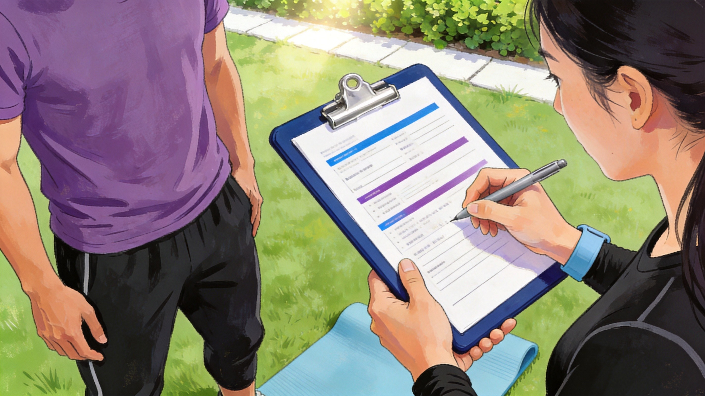
图6-1
表6-13
| 评估类别 | 具体评估 | 目的 |
|---|---|---|
| 静态姿势评估 | 直角规则（前面观/后面观/侧面观） | 发现姿势偏差和肌肉不平衡 |
| 姿势偏差识别 | 表10-1至10-4：脊柱前凸/驼背/平背/摇摆背 | 定位紧张/伸长的肌群 |
| 歪斜评估 | ①距下关节旋前/旋后 ②髋内收 ③骨盆倾斜 ④肩部姿势 ⑤头部姿势 | 逐关节排查动力链问题 |
| 静态平衡 | 单脚站立测试（睁眼/闭眼） | 评估跌倒风险、日常生活能力、下背痛风险 |
| 动态平衡 | Y平衡测试 | 评估双腿对称性，识别下肢损伤风险（前后差异>4cm=高风险） |
| 核心耐力 | McGill躯干肌肉耐力测试组合 | 评估核心肌群平衡：屈曲/伸展比<1.0，侧桥比0.95-1.05背痛风险指标 |
| 柔韧性 | 托马斯试验（髋屈肌）/ 被动直腿抬高（腘绳肌）/ 肩部屈曲伸展 | 评估关键肌群长度是否正常 |
表6-14
| 身体区域 | 姿势偏差 | 主要观察姿势 | 关节及身体排列 | 疑似紧张／缩短或活动过度的肌肉 | 疑似拉长／稳定不足或活动不足的肌肉 |
|---|---|---|---|---|---|
| 足与踝 | 足内翻 | 前面观、后面观 | 足底向内；外侧足缘承重增加；跟骨可能内翻；常伴距下关节旋后、胫骨与股骨外旋 | 胫骨前肌、胫骨后肌；腓肠肌和比目鱼肌可能限制踝背屈 | 腓骨长肌、腓骨短肌及足踝外侧稳定肌群 |
| 足与踝 | 足外翻 | 前面观、后面观 | 足底向外；内侧足缘承重增加；足弓可能下降；跟骨外翻；常伴距下关节旋前、胫骨与股骨内旋 | 腓骨肌群；ACE还提示腓肠肌和比目鱼肌复合体的紧张可能影响跟骨位置和踝背屈 | 胫骨后肌、足底内在肌及足踝内侧稳定肌群 |
| 膝关节 | 膝超伸 | 侧面观 | 膝关节超过中立伸展位置，膝后侧受压；重力作用线通常位于膝关节前方 | 股四头肌、腓肠肌和比目鱼肌可能参与维持过伸姿势 | 腘绳肌、腘肌及膝关节动态稳定肌群可能控制不足 |
| 髋与骨盆 | 髋内收／髋上提 | 后面观 | 一侧髂嵴高于另一侧；上提侧股骨相对内收；躯干或骨盆可能发生侧移 | 上提侧腰方肌、躯干侧屈肌或髋内收肌可能紧张，应进一步确认 | 上提侧髋外展肌群，尤其臀中肌、臀小肌及外侧髋部稳定肌可能拉长或控制不足 |
| 骨盆 | 骨盆前倾 | 侧面观 | 髂前上棘向下、向前旋转；腰椎前凸通常增加 | 髋关节屈肌、竖脊肌 | 腘绳肌、腹直肌；臀肌和腹部稳定肌也可能控制不足 |
| 骨盆 | 骨盆后倾 | 侧面观 | 髂前上棘向上、向后旋转；腰椎前凸通常减小 | 腹直肌、腘绳肌 | 髋关节屈肌、竖脊肌 |
| 身体区域 | 姿势偏差 | 主要观察姿势 | 关节及身体排列 | 疑似紧张／缩短或活动过度的肌肉 | 疑似拉长／稳定不足或活动不足的肌肉 |
| 脊柱 | 脊柱前凸 | 侧面观 | 腰椎前凸增加，通常伴骨盆前倾；髋关节可能保持屈曲趋势 | 髋关节屈肌、腰椎伸肌／竖脊肌 | 髋关节伸肌、腹直肌、腹外斜肌及腹部稳定肌群 |
| 脊柱 | 脊柱后凸 | 侧面观 | 胸椎后凸增加；肩部可能前伸或圆肩；头部可能前移 | 胸部和前肩肌群、背阔肌、颈椎伸肌 | 上背部伸肌、肩胛稳定肌群、颈椎屈肌 |
| 脊柱 | 平背 | 侧面观 | 腰椎前凸减小，骨盆通常后倾；胸椎曲线可能变平，头部可能前移 | 腹直肌、上背部伸肌、颈椎伸肌、腘绳肌 | 髂腰肌、腹内斜肌部分纤维、腰椎伸肌、颈椎屈肌 |
| 脊柱 | 摇摆背 | 侧面观 | 骨盆向前平移并后倾；髋关节过伸；胸椎后凸增加；躯干上部向后倾斜；头部可能前移 | 腘绳肌、腹内斜肌上部纤维、部分腰椎伸肌和颈椎伸肌 | 髂腰肌、腹外斜肌、上背部伸肌、颈椎屈肌 |
| 脊柱 | 脊柱侧凸 | 前面观、后面观 | 脊柱在额状面出现侧向曲线，通常伴椎体旋转；肩、肩胛骨、腰线和骨盆可能不对称 | 凹侧躯干侧屈肌、旋转肌及部分腰方肌可能缩短或活动过度 | 凸侧躯干稳定肌可能拉长或控制不足；具体肌肉取决于侧凸方向和旋转情况 |
表6-15
| 身体区域 | 姿势偏差 | 主要观察姿势 | 关节及身体排列 | 疑似紧张／缩短或活动过度的肌肉 | 疑似拉长／稳定不足或活动不足的肌肉 |
|---|---|---|---|---|---|
| 肩部 | 高低肩 | 前面观、后面观 | 一侧肩峰、锁骨或肩胛骨高于另一侧；肩胛骨可能伴随上提或下压 | 高肩侧上斜方肌、肩胛提肌、菱形肌 | 高肩侧下斜方肌和肩胛下压稳定肌可能不足；低肩侧情况需结合侧屈和负重习惯评估 |
| 肩关节 | 肱骨内旋 | 前面观 | 手背明显朝前，肘窝不朝前；肱骨头内旋，可能伴圆肩 | 胸大肌、背阔肌、肩胛下肌 | 冈下肌、小圆肌等肩外旋肌群 |
| 肩胛骨 | 肩胛骨前伸 | 后面观、侧面观 | 肩胛骨向外、向前移动；肩胛骨内侧缘远离脊柱；常伴圆肩 | 胸小肌、胸大肌等前侧胸肌群；部分个体可能伴前锯肌活动过度 | 菱形肌、中斜方肌等肩胛后缩稳定肌群 |
| 肩胛骨 | 翼状肩胛 | 后面观 | 肩胛骨内侧缘或下角明显离开胸廓，呈翼状突出 | 不能单独根据翼状肩胛确定紧张肌；胸小肌紧张可能影响肩胛位置 | ACE明确提示前锯肌可能拉长或稳定能力不足；也应评估下斜方肌和肩胛稳定肌群 |
| 头颈 | 头部前引／头部前倾姿势 | 侧面观 | 头部向前平移，耳垂位于肩锁关节前方；通常表现为上颈椎伸展、下颈椎相对屈曲 | 颈椎伸肌、上斜方肌、肩胛提肌 | 深层颈屈肌及颈椎前侧稳定肌群 |
【教练提示】
Y平衡测试关键点：
● 测试前部（ANT）、后内侧（PM）、后外侧（PL）三个方向
● 计算双腿对称性差异
● ⚠ 前部差异>4cm（1.6英寸）= 下肢损伤高风险
2.3 进阶条件
● 客户在功能性评估中表现出良好的姿势稳定性和动力链灵活性
● 核心功能达标（McGill比值在正常范围内）
● 平衡能力达到年龄对应的正常水平
● 关键肌群柔韧性正常（无严重紧张限制动作）
2.4 对应人群
● 久坐少动的新手客户
● 存在姿势偏差、肌肉不平衡的客户
● 需要建立基础核心稳定性的客户
● 老年人（重点：平衡+核心+柔韧性）
● 术后/伤后恢复期的客户（需医学许可后）
● 所有新客户均从功能性训练阶段开始
2.5 McGill核心耐力比值（必背重点）
比值公式：
● 屈曲:伸展 < 1.0（例：120s/150s = 0.80 ）
● 右侧桥:左侧桥 在 0.95-1.05 之间（例：88s/92s = 0.96 ）
● 侧桥(任一侧):伸展 < 0.75（例：88s/150s = 0.59 ）
● 屈曲/伸展比 < 1.0 → 屈肌不能比伸肌耐力强太多（伸肌是脊柱的主要稳定肌）
● 侧桥比 0.95-1.05 →（约等于1） 左右要近乎对称
● 侧桥/伸展 < 0.75 → 侧向稳定肌耐力不应超过伸展肌耐力的75%。
● 【教练提示】
● 场景：客户McGill测试结果：屈肌耐力180秒，伸肌耐力100秒，屈伸比=1.80。
● 建议：这个比值明显超出正常范围（>1.0）。说明他的"腹肌"（屈肌）比"后背"（伸肌）强太多。这种不平衡容易容易导致脊柱长期保持屈曲状态，从而导致下背痛。
● 【常见误区】：看到客户腹肌耐力强觉得很棒，继续加强核心屈曲训练。
● 【建议】：发现比值失衡，优先加强伸肌耐力训练。
● 常见误区：只关注客户"能做什么"，不关注"肌肉平衡"。
● 【思考】McGill测试评估的核心目标是脊柱稳定肌群的协调能力。下背部健康关键在肌肉力量的均衡。这解释了为什么很多常年训练"腹肌发达"的人容易腰痛，很多情况下这些训练者的肌肉力量呈现不均衡。
知识点总结
IFT1期的功能训练，会员的核心，及各关节稳定灵活的功能过关后，将为IFT2期的动作训练做好准备。
互动考题：
● 一位客户Y平衡测试前部差异为6cm，说明什么？应该怎么调整训练计划？ ◦ 答案： 差异>4cm，提示下肢损伤风险。需要加强髋外展肌群（臀中肌）和踝关节稳定性训练，暂缓进阶到动作训练阶段。
● 功能性训练 = 站得稳 + 关节活
● 评估覆盖：姿势、平衡、核心耐力、柔韧性
● McGill比值：屈伸<1.0，左右对称，侧桥<75%（0.75）
9.2 动作训练
3.1 训练重点
● 在功能性训练建立的关节活动度（ROM）的 基础上，教导客户5种主要动作模式（5 Primary Movement Patterns）的高效执行
● 核心目标：在不影响姿势或关节稳定性的前提下，在所有三个运动平面有效地进行5种主要动作
● 训练侧重从"能不能动"升级为"能不能正确地动"
3.2 五种主要动作模式
表6-16
| 动作模式 | 日常示例 | 训练示例 |
|---|---|---|
| 屈髋提起（Hinge/Hip Lift）屈髋提起/弯腰提起（Bend and Lift / Hinge） | 坐椅子/从椅子上站起来/蹲下捡东西 | 深蹲（Squat Pattern) |
| 单腿（Single-Leg） | 步行/上下楼梯/弓箭步 | 高台阶跨步（Step-up） |
| 推（Push） | 推门/俯卧撑/过头推举 | 俯卧撑稳定性（Shoulder push stabilization) |
| 拉（Pull） | 拉车门/引体向上/划船 | 站姿划船(Standing Row) |
| 旋转（Rotation） | 系安全带/高尔夫挥杆/从侧方捡物 | 胸椎灵活性旋转(Thoracic spine mobility) |
● 五种动作模式记忆口诀：
● "屈单推拉旋"： 弯腰捡东西是屈髋（屈），上下楼梯是单腿（单），推门是推（推），拉车门是拉（拉），转身是旋转（旋）。
● 【教练提示】
● 常见误区：认为"训练动作"和"日常动作"完全不同。
● ✓ 正确理解：5种动作模式都是从日常生活提炼出来的。训练动作是日常动作的"标准化版本"。客户学会正确的训练动作 = 学会更高效地完成日常动作。
3.3 三个运动平面
表6-17
| 运动平面 | 定义 | 日常活动举例 |
|---|---|---|
| 矢状面 | 将身体分为左右两半， 运动方向为前后（屈曲/伸展） | 走路（抬腿）、深蹲上下 |
| 额状面（冠状面） | 将身体分为前后两半， 运动方向为左右（外展/内收） | 侧向跨步、侧平举 |
| 水平面（横截面） | 将身体分为上下两半，运动方向为旋转 | 转身、挥杆、 跑步时躯干扭转 |
思考：● 为什么要在三个运动平面内训练？
因为日常生活和运动很少只发生在单一平面内。真正的功能性训练需要让身体在所有平面上都能有效地运动和发力。
3.4 对应评估
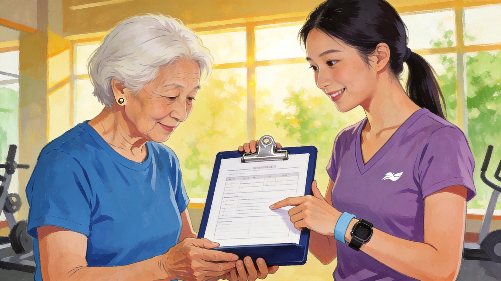
图6-2
表6-18
| 动作模式 | 评估方法 | 关键观察点 |
|---|---|---|
| 屈髋提起 | 深蹲模式（5-10次自然深蹲）（Squat Pattern) | 前面观：足旋前？膝内移？躯干偏移？侧面观：脚跟着地？臀肌/四头肌主导？大腿平行？腰/胸椎过度弯曲？ |
| 单腿 | 高台阶跨步（Step-up） | 前面观：足稳定性？膝内扣？髋内收>2英寸？侧面观：踝背屈不足？躯干前倾？ |
| 推 | 俯卧撑稳定性（Shoulder push stabilization) | 侧面观：翼状肩胛？下背部下陷/过度伸展？ |
| 拉 | 站姿划船(Standing Row) | 侧面观：腰部过伸？后面观：肩胛抬升/外展？头部前移？ |
| 旋转 | 胸椎灵活性旋转(Thoracic spine mobility) | 躯干能否在双侧各实现45度旋转？是否存在双侧差异？ |
详细的五大动作 的评估
深蹲模式评估常见代偿表
表6-19
| 观察平面 | 部位 | 常见代偿 | 疑似过度活跃／紧张的肌肉或原因 | 疑似活动不足／拉长的肌肉 |
|---|---|---|---|---|
| 前面观 | 足部 | 踝关节向内塌陷、足部外翻或足部向外旋转 | 比目鱼肌、腓肠肌外侧头、腓骨肌群 | 腓肠肌内侧头、胫骨肌群及足踝稳定肌；臀中肌、臀大肌和部分髋部稳定肌也可能控制不足 |
| 前面观 | 膝关节 | 膝盖向内移动，即动态膝外翻 | 髋内收肌群、阔筋膜张肌 | 臀中肌、臀大肌 |
| 前面观 | 躯干 | 躯干向一侧偏移或旋转 | 可能与单侧主导、关节负荷期下肢稳定性不足或肌肉不平衡有关 | 单侧核心及髋部稳定肌群，需结合其他评估确认 |
| 侧面观 | 足部 | 脚跟无法保持接触地面 | 比目鱼肌紧张；踝背屈不足 | ACE原表没有为此列出固定的活动不足肌肉 |
| 侧面观 | 髋与膝 | 动作从膝关节开始，膝盖过早向前移动，呈“四头肌主导” | 股直肌及髋关节屈肌可能处于主导地位 | 臀肌群活动不足 |
| 侧面观 | 髋与膝 | 无法使大腿顶部接近与地面平行 | 比目鱼肌紧张可能限制踝背屈，使胫骨向前移动受限；也可能存在动作技术或关节活动度限制 | 臀肌、下肢稳定肌可能控制不足，需进一步评估 |
| 侧面观 | 膝后侧 | 腘绳肌明显挤压小腿后侧 | 不能单独归因于腘绳肌紧张，可能与下蹲深度、身体结构和动作策略有关 | 肌力不足或动力学控制不良可能影响下蹲稳定性 |
| 侧面观 | 腰椎 | 背部过度拱起，即腰部主导 | 髋关节屈肌、竖脊肌、背阔肌 | 核心肌群、腹直肌、臀肌群、腘绳肌 |
| 侧面观 | 躯干 | 背部或躯干过度向前倾斜 | 背阔肌、胸大肌、胸小肌；也可能与踝背屈不足、髋活动度或动作策略有关 | 核心肌群、臀肌群、上背部伸肌 |
| 侧面观 | 头颈 | 头部向下 | 髋关节和躯干屈曲程度增加；也可能是视觉或动作控制问题 | 头颈中立位控制不足 |
| 侧面观 | 头颈 | 头部向上 | 颈椎伸肌局部压迫和紧缩 | 深层颈屈肌控制可能不足 |
单腿模式评估——高台阶跨步
评估时，客户以单腿支撑完成高台阶跨步。分别从正面和侧面观察足、膝、髋、骨盆、躯干及抬高腿的位置。
表6-20
| 主要观察部位 | 常见动作问题 | 疑似过度活跃或紧张的肌肉 | 疑似活动不足或稳定不足的肌肉 |
|---|---|---|---|
| 支撑足 | 足部稳定性不足，足外旋、足弓下降或踝关节内翻／外翻 | 比目鱼肌、外侧腓肠肌、腓骨肌群 | 内侧腓肠肌、胫骨肌群、臀中肌、臀大肌；必要时检查股薄肌和缝匠肌的控制 |
| 支撑膝 | 膝关节向内移动，膝盖不能保持与第二脚趾方向一致 | 髋内收肌群、阔筋膜张肌 | 臀中肌、臀大肌及其他髋外展、外旋肌 |
| 支撑髋 | 髋部向内移动超过约5.1厘米，或支撑腿明显内旋 | 髋内收肌群、阔筋膜张肌、支撑腿髋内旋肌 | 臀中肌、臀大肌、支撑腿髋外旋肌 |
| 骨盆 | 对侧骨盆下沉、骨盆旋转或支撑侧髋部向外偏移 | 支撑腿髋内收肌及可能限制骨盆控制的髋部肌群 | 支撑侧臀中肌、臀大肌及躯干侧向稳定肌 |
| 躯干 | 躯干侧倾、前倾或旋转 | 不宜仅凭观察指定某一块紧张肌肉，应进一步检查髋部和躯干两侧的活动度 | 核心稳定肌群、腹斜肌、臀中肌及其他骨盆稳定肌群 |
| 抬高腿 | 抬高腿偏离矢状面，膝向内或向外移动 | 抬高腿的髋内收肌、髋内旋肌或髋外旋肌，具体取决于偏移方向 | 抬高腿相反方向的髋部控制肌群 |
| 抬高腿高度不足 | 踝背屈不足、髋屈不足，或通过抬高骨盆代偿 | 踝跖屈肌、抬高腿的髋伸肌；支撑腿髋屈肌也可能限制髋关节正常运动 | 踝背屈肌、抬高腿髋屈肌、支撑腿髋伸肌 |
| 腰椎和骨盆 | 躯干前倾并伴骨盆前倾、腰椎伸展增加 | 支撑腿髋屈肌、腰椎伸肌 | 腹直肌、腹斜肌、臀肌及其他核心稳定肌 |
| 腰椎和骨盆 | 骨盆后倾或躯干过度屈曲 | 腹直肌、髋伸肌 | 支撑腿髋屈肌及躯干伸展稳定肌 |
观察要点：重点比较左右两侧。若只有一侧出现膝内移、骨盆下沉或躯干侧倾，应优先考虑两侧髋部力量、活动度或动作控制存在差异。
推动作评估——俯卧撑稳定性评估
俯卧撑稳定性评估主要观察闭链推动作中肩胛骨能否稳定贴附于胸廓，以及躯干能否保持中立。
表6-21
| 主要观察部位 | 常见动作问题 | 疑似问题肌肉或原因 |
|---|---|---|
| 肩胛胸廓关节 | 推起或下降过程中出现肩胛骨内侧缘、下角翘起，即翼状肩胛 | 肩胛稳定肌不能有效固定肩胛骨，重点检查前锯肌、斜方肌、菱形肌和肩胛提肌之间的协同；胸椎过平也可能影响肩胛骨贴合 |
| 肩胛骨 | 肩胛骨过度耸起或提前上提 | 上斜方肌、肩胛提肌可能代偿；前锯肌及中、下斜方肌控制不足 |
| 肩关节 | 肘部过度外展、肱骨头向前移动或肩部向前塌陷 | 胸大肌、胸小肌、背阔肌等可能限制肩部位置；肩袖及肩胛稳定肌控制不足 |
| 躯干 | 腰部下沉、腰椎过度伸展 | 腹部和核心稳定肌群活动不足，不能抵抗腰椎伸展；髋屈肌或腰椎伸肌可能代偿 |
| 骨盆 | 骨盆旋转、身体左右晃动 | 腹斜肌、腹横肌、臀肌及躯干抗旋转能力不足 |
观察要点：俯卧撑评估的重点不是完成次数，而是肩胛骨是否稳定、头—胸椎—骨盆能否保持整体排列。
三、拉动作评估——站姿划船评估
站姿划船评估用于观察拉动作中肩胛骨回缩、肩关节运动和躯干稳定之间的配合。
表6-22
| 主要观察部位 | 常见动作问题 | 疑似过度活跃或紧张的肌肉 | 疑似活动不足或稳定不足的肌肉 |
|---|---|---|---|
| 腰椎 | 拉动过程中腰椎过度伸展，以身体后仰代替肩关节和肩胛骨运动 | 髋屈肌、脊柱伸肌 | 核心肌群、腹直肌、臀肌、腘绳肌 |
| 肩胛骨 | 拉动时耸肩，肩胛骨过度上提 | 上斜方肌、肩胛提肌；菱形肌也可能参与不恰当的提肩代偿 | 中斜方肌、下斜方肌及肩胛骨下压稳定肌 |
| 头颈部 | 下巴前伸或头部向前、向后仰 | 颈部伸肌、上斜方肌、肩胛提肌 | 颈深屈肌 |
| 肩胛骨 | 拉动结束时肩胛骨仍然外展，不能充分回缩 | 前锯肌、肩前部肌群、上斜方肌可能占优势 | 大、小菱形肌和中斜方肌 |
| 肩关节 | 肱骨向前滑动、肩部内旋或肘部运动轨迹明显偏离 | 胸大肌、胸小肌、背阔肌等可能限制肩关节位置 | 肩袖外旋肌、后束三角肌及肩胛稳定肌 |
| 躯干 | 身体旋转或左右移动 | 一侧背阔肌、胸肌或躯干旋转肌可能占优势 | 腹斜肌、多裂肌及其他抗旋转稳定肌群 |
观察要点：拉动作应主要由肩关节伸展和肩胛骨控制完成。如果客户必须耸肩、伸腰或前伸头部才能完成动作，说明负荷可能过大，或局部活动度与稳定性不足。
四、旋转评估——坐姿胸椎旋转
客户跨坐在训练凳上，固定骨盆并保持躯干直立，分别向左、向右旋转。评估重点是胸椎旋转幅度及左右对称性。
表6-23
| 主要观察内容 | 常见动作问题 | 疑似问题肌肉或原因 |
|---|---|---|
| 旋转幅度 | 在骨盆保持稳定的情况下，躯干不能完成约45°旋转 | 可能存在胸椎活动度不足；应进一步检查腹内、外斜肌，多裂肌、回旋肌、胸椎伸肌以及背阔肌、胸肌对胸廓运动的影响 |
| 左右对称性 | 左右旋转幅度存在明显差异 | 可能与单侧优势、脊柱发育或长期姿势差异有关；需要比较两侧躯干旋转肌和髋旋转肌 |
| 骨盆 | 骨盆跟随躯干旋转 | 腹斜肌和深层核心肌群未能稳定骨盆；也可能以髋关节旋转代偿胸椎活动不足 |
| 腰椎 | 腰椎过度旋转或侧屈 | 胸椎旋转受限，腰椎和骨盆代偿；躯干节段控制不足 |
| 胸廓 | 旋转时身体侧倾、前屈或后仰 | 胸椎侧屈、屈伸与旋转控制不协调；需进一步检查胸椎活动度及躯干两侧肌肉控制 |
| 肩部 | 以肩关节前伸或手臂摆动增加旋转幅度 | 胸椎活动不足，肩胛胸廓关节和盂肱关节参与代偿 |
| 头颈部 | 头部先于躯干转动，或颈部过度旋转 | 颈部旋转代偿胸椎活动不足；颈部深层稳定肌控制可能不足 |
评估说明：ACE原表主要根据旋转角度和左右差异判断胸椎活动情况，并未为旋转受限规定唯一的“紧张肌—无力肌”组合。因此，旋转评估发现异常后，应继续检查胸椎、肩胛带、骨盆和髋关节，不能仅凭动作表现指定某一块肌肉。
3.5 进阶条件
● 客户在5种动作模式中均能控制良好地完成动作，无明显代偿
● 在深蹲中能控制下蹲阶段、保持膝关节正确对位
● 在Step-up（高台阶跨步） 中能保持髋部稳定、不过度内收
● 俯卧撑中无翼状肩胛或腰部下陷
● 站姿划船中无肩胛抬升或腰部过伸
● 胸椎旋转双侧对称且各达45°
3.6 对应人群
● 已完成功能性训练阶段的客户
● 有一定运动基础但需要纠正动作模式的客户
● 准备开始负重训练的客户
● 想要提升日常动作效率的客户
思考
"膝盖不超过脚趾"误区
● 这一说法不应被当作适用所有人的绝对规则
● 过度限制膝关节前移可将更多力矩转移至髋关节和躯干；应结合个体解剖、负荷和动作目标判断
● 正确做法：屈髋主导模式下（髋关节铰链），膝盖自然会随身体下沉前移
● 股骨较长的人在正确动作模式下，膝盖超过脚趾通常是安全的
● 【思考】
● 为什么一个过时的研究能流传这么久？因为它听起来"符合常识"。但身体不是简单机械，关节之间相互联动。过度限制一个关节的运动，必然导致其他关节代偿。IFT模型的逻辑正是基于这个原理： 先建立关节的稳定灵活性，在建立正确的动作模式，再安全地进行关节负荷训练。
知识点总结
动作训练的核心要点：在各种姿势下都能正确移动，后续负重训练才有安全的动作基础。
互动考题：
● 客户在俯卧撑评估中出现"翼状肩胛"（肩胛骨过度翘起）。你认为问题可能出在哪里？训练中应该如何改善？
● 答案：翼状肩胛提示前锯肌无力/胸小肌紧张 + 中下斜方肌激活不足。训练重点：松解紧张的肌肉（胸小肌）加强前锯肌（推墙俯卧撑、锯齿俯卧撑）和中下斜方肌（肩胛下沉练习）
● 五种动作模式：屈单推拉旋
● 三个运动平面：矢状-前后、额状-左右、水平-旋转
● 评估原则：只观察不纠正，记录代偿
9.3 负荷/速度训练
4.1 IFT三期 符合/速度
训练重点
● 在动作训练建立的高效动作模式基础上增加外部负荷和发展力量、爆发力和肌肉耐力
● 包含三个子方向：
● 肌肉耐力（Muscular Endurance）：次最大负荷、高重复次数
● 肌肉力量（Muscular Strength）：高负荷、低重复次数
● 肌肉爆发力（Muscular Power）：力×速度，快速产生力的能力
● 三个子方向的类比（不够精准，但可以帮助记忆）
● 肌肉耐力 --“举多少次”
● 肌肉力量 --“ 举多重”
● 肌肉爆发力--“举多快”
4.2 对应评估

图6-3
表6-24
| 子方向 | ACE评估方法 | 记录与判定 | 适用条件及注意事项 |
|---|---|---|---|
| 肌肉耐力——上肢 | 俯卧撑评估：根据客户能力采用标准俯卧撑或改良俯卧撑 | 记录保持正确动作时连续完成的次数；可依据相应的年龄、性别参考标准评价 | 出现腰椎下沉、头部前伸、肩胛骨明显翘起或动作幅度不足时，不再计入有效次数 |
| 肌肉耐力——下肢 | 自重深蹲评估 | 记录在规定动作标准下完成的有效次数，同时观察足、膝、髋和躯干排列 | 不能只记录次数。若出现足部失稳、膝内移、躯干过度前倾或腰椎代偿，应终止测试或先改善动作质量 |
| 最大肌肉力量——上肢 | 1-RM卧推 | 记录在正确动作技术下仅能完成1次的最大负荷 | 适用于完成健康筛查、熟悉抗阻训练且能够保持正确动作的客户；需要保护者和规范的递增负荷程序 |
| 最大肌肉力量——下肢 | 1-RM深蹲 | 记录在正确动作技术下仅能完成1次的最大负荷 | 适用于完成健康筛查、熟悉抗阻训练且能够保持正确动作的客户；需要保护者和规范的递增负荷程序 |
| 次最大肌肉力量 | 多次重复测试估算1-RM，如选择能够规范完成数次但不能继续完成的负荷，再通过换算表或公式估算1-RM | 记录负荷和规范完成的重复次数，并采用统一方法估算1-RM | 适用于不宜或没有必要直接进行1-RM测试的客户；重复次数过多会降低估算最大力量的准确性 |
| 下肢爆发力 | 纵跳评估 | 记录站立摸高与跳跃摸高的差值；通常完成数次，取最佳有效成绩 | 用于评估下肢垂直爆发力。客户应具备安全起跳和落地能力；存在下肢关节损伤、疼痛、平衡障碍或术后恢复问题者不宜测试 |
4.3 1-RM评估重要规则（必背）
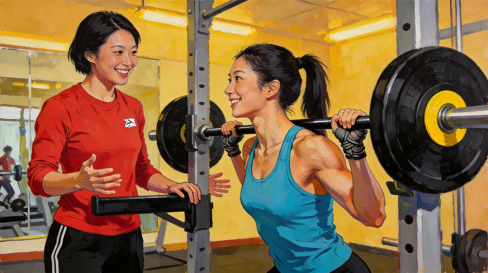
图6-4
● 仅建议在IFT模型负荷/速度训练阶段进行
● 新手可能不熟悉器材、不了解自身能力，容易在最大极限前放弃
● 以下个体严禁进行1-RM评估：①高血压和/或血管疾病史；②骨科限制（骨折未愈合、严重骨质疏松）；③妊娠晚期；④未控制的代谢疾病；⑤急性损伤期
● 评估前需充分热身，但不要做长时间静态拉伸（会降低表现）
● 避免Valsalva动作（屏气）
● 理想通过3-5组达到1-RM，每组间休息2-5分钟
● 对于大多数客户，不需要1-RM作为基线， 记录训练中的渐进负荷提升即可
● 对于已稳定通过动作训练阶段、动作模式良好的客户，可在过渡期先使用次最大力量估测，不必等到完全进入负荷/速度训练阶段才评估力量水平。
● 1-RM禁忌清单：
● ❌ 新手（不熟悉器材+不了解自身能力）
● ❌ 高血压/血管疾病
● ❌ 急性损伤期/骨科限制
● ❌ 未充分热身
● ❌ 2小时之内完成了高强度长时间的静态拉伸
● 口诀：「新高骨未拉伸」（新手/高血压/血管疾病/骨科限制/急性损伤/未充分热身/长时间静态拉伸后）
4.4 次最大力量估测法
图6-5
● 深蹲/腿举系数表与卧推/胸推系数表
● 例：客户以160磅完成8次卧推 → 1-RM = 160 × 1.255 = 201磅
4.6 对应人群
● 动作模式已经良好控制、没有代偿的客户
● 想要发展肌肉力量、体积或爆发力的客户
● 运动员或对高级训练形式感兴趣的客户
● ⚠不适用于骨科限制或仍处于损伤恢复期的客户（爆发力评估禁忌）
【教练提示】
1-RM评估的替代方案：
1. 次最大力量估测（更安全）：让客户做8-12次，记录重量，查表估算1-RM
2. 记录渐进负荷：不需要1-RM数字，记录每次训练能完成的重量和次数，观察进步曲线
3. 对话式评估：问客户"这个重量你还能再做几次"，在"还能做2-3次"时停止
爆发力评估的禁忌：
● 骨质疏松客户（骨折风险高）
● 膝关节损伤未完全恢复
● 腰椎间盘突出
● 任何刚做完手术的部位
● 老年人（视情况）
【思考】
为什么1-RM评估有这么多限制？因为最大力量测试就是在挑战身体极限。挑战极限必然伴随风险： 关节压力、肌肉撕裂、心血管应激等。IFT模型的逻辑是：只有在前面两个阶段建立了足够的功能基础和动作控制能力，身体才能安全地承受这种压力。
知识点总结
正确动作模式是安全负重的前提
互动考题：
● 有位客户之前是举重运动员，现在想重新开始训练。你认为他可以直接进入负荷/速度训练阶段吗？为什么？
● 答案：需要重新评估。即使是举重运动员，如果长时间没有训练，动作模式可能退化，且不了解当前身体状态。应先进行动作评估，确认5种动作模式无代偿后，再进入负荷/速度训练。
● • 三个子方向：耐力-多次、力量-多重、爆发-多快
● • 1-RM禁忌：新高骨未拉伸（新手/高血压/骨科限制/急性损伤/未热身/静态拉伸后）
● • 次大力量估算：完成该次数所使用的负荷×对应系数＝估算1RM
● • 双渐进训练：先加次数，再加5%重量
9.4 三阶段整合
5.1 IFT三阶段整合表
表6-25
| 维度 | 阶段一：功能性训练 | 阶段二：动作训练 | 阶段三：负荷/速度训练 |
|---|---|---|---|
| 核心目标 | 建立姿势稳定性 + 动力链灵活性 | 在3个平面内高效完成5种动作模式 | 增加负荷，发展力量/爆发力/耐力 |
| 训练重点 | 肌肉耐力、柔韧性、核心功能、静态/动态平衡 | 5种动作模式的质量控制 | 肌肉耐力、肌肉力量、肌肉爆发力 |
| 5种动作模式 | 不涉及（先打好基础） | 屈髋提起、单腿、推、拉、旋转 | 在5种动作模式上叠加负荷/速度 |
| 对应评估 | 静态姿势评估（直角规则）、5大偏斜、 单脚站立、Y平衡、McGill核心耐力组合、托马斯试验、 被动直腿抬高、 肩部柔韧性 | 深蹲模式评估 高台阶跨步评估 俯卧撑稳定性评估、站姿划船评估、 胸椎旋转评估 | 俯卧撑耐力评估、自重深蹲耐力评估1-RM卧推/深蹲、次最大力量估测、纵跳评估 |
| 评估目的 | 发现姿势偏差、 肌肉不平衡、 平衡缺陷、 柔韧性不足 | 观察 动作控制能力、 代偿模式、 关节稳定性 | 量化力量/耐力/爆发力水平，建立基线 |
| 进阶条件 | 姿势稳定性良好、 核心功能达标、 平衡能力正常、 关键肌群柔韧性正常 | 5种动作模式 均能无代偿完成、 深蹲控制良好、 推拉稳定、胸椎旋转对称 | 持续渐进超负荷动作模式始终无代偿 |
| 对应人群 | 所有新客户、久坐少动者、姿势偏差者、老年人、恢复期客户 | 已完成功能性训练阶段者、需纠正动作模式者 | 动作模式良好、想发展力量/爆发力者、运动员 |
| 阶段颜色 | 黄色 | 橙色 | 红色 |
| 核心警示 | 不能跳过！所有客户从这开始 | 不能跳过！动作质量是负重的安全前提 | 1-RM有损伤风险，新手不适合 |
5.2 评估的层次逻辑
功能性评估（能不能稳定站好？关节够不够灵活？） ↓ 通过动作评估（能不能正确地完成5种动作？有无代偿？） ↓ 通过负荷/速度评估（能举多重？能跳多高？能做多少次？）
● 评估三问：
● 功能性评估看：每个关节的功能和核心
● 动作评估看：五大动作模式
● 负荷/速度评估看：多少次，多重，多快
● 【思考】
● 评估决定训练起点， 这是IFT模型最重要的原则。应先通过必要的评估了解客户当前的功能水平和动作模式，再决定训练起点。客户说"我有经验"不等于"功能没问题"。
本章知识点总结与练习
核心要义凝练
● IFT三阶段 = 功能 → 动作 → 负荷，不能跳过前面的阶段
● 功能性训练 = 所有新客户的起点，评估姿势、平衡、核心、柔韧性
● 动作训练 = 5种动作模式（屈髋、单腿、推、拉、旋转）在3个运动平面（矢状、额状、水平）
● 负荷/速度训练 = 在正确动作上加重量/速度，分肌肉耐力、力量、爆发力三个方向
● McGill比值是背部健康的重要指标：屈伸比<1.0，侧桥对称（95%-105%），侧桥/伸展<0.75
● 1-RM评估有严格禁忌：新手、高血压、血管疾病患者不能做
● "膝盖不过脚趾"是误区：关键看膝盖是否内扣、髋关节是否先启动
思考与练习
开放思考题：有位退役运动员，体检报告显示骨密度偏低，想重新开始力量训练。你会如何基于IFT模型为他设计训练方案？需要注意哪些特殊考量？
选择题：关于McGill核心耐力测试，以下说法正确的是？
•A. 屈曲/伸展比值>1.0说明伸肌耐力优于屈肌
• B. 侧桥/伸展比≥0.75属于正常范围
• C. 左右侧桥比超出0.95-1.05范围提示侧向稳定失衡
• D. McGill测试主要评估的是肌肉力量而非肌肉耐力
10 小结
一、核心回顾
ACE IFT模型是ACE-CPT的核心框架：先评估客户功能，再按"功能→动作→负荷"三阶段递进训练，应根据评估结果选择起点，并在基础能力满足后再进阶。
二、知识脉络图
三、考前必背表
3.1 IFT三阶段核心对比
表6-26
| 对比维度 | 功能性训练（黄色） | 动作训练（橙色） | 负荷/速度训练（红色） |
|---|---|---|---|
| 核心问题 | "能稳吗？" | "动对吗？" | "能多重？" |
| 训练重点 | 稳定性+灵活性 | 动作质量 | 力量+耐力+爆发力 |
| 代表评估 | Y平衡、McGill | 深蹲、俯卧撑 | 1-RM、俯卧撑次数、纵跳摸高 |
| 进阶标志 | 姿势稳定+核心达标 | 5种动作无代偿 | 持续渐进超负荷，无代偿 |
3.2 五大动作模式记忆
表6-27
| 口诀 | 对应动作 | 日常举例 | 评估观察 |
|---|---|---|---|
| 屈 | 屈髋提起 | 坐椅子/捡东西 | 深蹲中髋关节启动？ |
| 单 | 单腿 | 走路/上下楼梯 | 高台阶跨步中髋内收？ |
| 推 | 推 | 推门/俯卧撑 | 翼状肩胛/腰部下陷？ |
| 拉 | 拉 | 拉车门/划船 | 肩胛抬升/腰部过伸？ |
| 旋 | 旋转 | 转身/挥杆 | 双侧不对称？ |
3.3 三个运动平面
表6-28
| 平面 | 分割方式 | 包含运动 | 训练举例 |
|---|---|---|---|
| 矢状面 | 左右分割 | 屈伸 | 深蹲、弓步 |
| 额状面 | 前后分割 | 展收 | 侧平举、侧弓步 |
| 水平面 | 上下分割 | 旋转 | 转身、划船旋转 |
3.4 McGill比值三兄弟
表6-29
| 比值 | 公式 | 正常范围 | 异常提示 |
|---|---|---|---|
| 屈伸比 | 屈曲时间÷伸展时间 | < 1.0 | 屈肌过强， 背部不稳 |
| 侧桥对称比 | 左侧÷右侧 | 0.95-1.05 | 一侧髋外展肌弱 |
| 侧桥伸展比 | 侧桥时间÷伸展时间 | < 0.75 | 侧桥强度异常 |
四、自检清单
4.1 基础概念自检
☐ 能说出IFT三阶段的名称和顺序
☐ 能解释为什么不能跳过前面的阶段
☐ 能说出5种主要动作模式的名称
☐ 能说出3个运动平面的名称和分割方式
☐ 能解释"功能性训练"和"动作训练"的区别
4.2 评估知识自检
☐ 能说出功能性训练阶段的评估项目
☐ 能说出动作训练阶段的评估项目
☐ 能说出McGill比值的三个正常范围
☐ 能说出Y平衡测试的下肢损伤风险阈值
☐ 能说出1-RM评估的禁忌人群
4.3 应用能力自检
☐ 能根据客户情况判断从哪个阶段开始
☐ 能识别深蹲评估中的常见代偿模式
☐ 能识别俯卧撑评估中的常见问题
☐ 能解释"膝盖不过脚趾"为什么是误区
☐ 能解释双渐进式训练的执行方法
六、章末三件事
第一件事：记住核心框架
今晚睡前，用5分钟回忆IFT三阶段："功能→动作→负荷"，想想每阶段的评估项目和训练重点。
第二件事：背熟必背数字
明天起床后，背诵以下数字：
● McGill屈伸比 < 1.0
● McGill侧桥对称 0.95-1.05
● Y平衡差异 > 4cm
● 胸椎旋转各45°
第三件事：完成自检清单
对照自检清单，检验自己对第6章的掌握程度。有不确定的地方，返回正文段重新学习。
综合测验（答案）
Q1：IFT模型的三个阶段是什么？按顺序排列。
功能性训练 → 动作训练 → 负荷/速度训练
Q2：5种主要动作模式是什么？
屈髋提起、单腿、推、拉、旋转
Q3：三个运动平面是什么？在每个平面中各举一个动作例子。
矢状面（深蹲上下）、额状面（侧平举）、水平面（旋转）
Q4：McGill核心耐力测试中，屈曲:伸展比的正常范围是多少？超过这个范围说明什么？
<1.0。超过说明屈肌耐力相对强于伸肌，提示背部稳定性风险。
Q5：为什么1-RM评估不适合新手客户？（列出至少3个原因）
①仅适用于负荷/速度训练阶段；②新手不熟悉器材、不了解自身能力；③对高血压、心血管风险或其他需要医疗限制的客户，应先根据筛查结果和医疗建议判断是否适合进行1-RM评估；④有损伤风险。
Q6：深蹲中"膝盖不超过脚趾"的建议有什么问题？
“膝盖永远不能超过脚趾”不应被当作所有人的绝对规则。深蹲时膝关节和髋关节会共同承担力矩；过度限制膝关节前移可能将更多负荷转移到髋部和躯干。应根据个体解剖、活动度、负荷与动作目标评估蹲法。
Q7：Y平衡测试中，什么情况下提示下肢损伤风险？
前部方向对称性差异超过4厘米（1.6英寸）。
Q8：双渐进式训练方案是什么？如何执行？
先增加重复次数至目标次数，再增加5%重量，然后重复循环。
ACEpresso结语：IFT模型是整个ACE-CPT体系的核心框架。记住一个原则：评估为训练起点和计划选择提供依据。完成必要的筛查与评估后，再结合客户目标制订训练计划。不应仅根据客户自述的训练经验判定起点，仍需根据筛查、评估与动作表现做出决定。 很多"有经验"的客户实际上带着错误的动作模式在训练。
慢性病客户注意事项
第 7章
ACE 教材第7章 · 慢性病客户注意事项
本章节内容按"核心机制→症状要点→运动改善模式→安全注意"四段结构组织
跨疾病通用原则（所有疾病都适用的原则）
医学许可与筛查
● 所有慢性病客户开始运动前需获得医学许可
● 遵循ACE整合式Fitness训练模型的一般原则，根据疾病特点个性化调整
● 使用SOAP笔记记录客户进展（主观→客观→评估→计划）
运动处方通用框架
● 心肺：FITT-VP（频率、强度、时间、类型、进阶、变化）
● 肌力：频率、强度、时间、类型、进阶
● 强度监控：HRR%、VO₂R%、RPE、VT1/VT2
多学科协作
● 私人教练需与治疗医生、理疗师、注册营养师、心理健康专业人员保持沟通
● 多学科方法优于单一药物或单一干预
生活方式干预核心
● 所有慢性病共同建议：适度（适量营养+热量+运动频率/强度/时间）
● 减重、增加身体活动、健康饮食、戒烟是共性初始策略
一、心脑血管疾病
1.1 冠状动脉疾病（CAD）
核心机制
● 动脉粥样硬化：血管壁炎症→脂质斑块沉积→管腔狭窄→心肌供血不足
● 心梗（MI）触发：脆弱斑块破裂→血栓形成→动脉完全堵塞
症状要点
● 心绞痛（胸痛/胸闷，运动时加重）
● 呼吸困难
● 运动耐量下降
● 风险因素：家族史、高血压、血脂异常、糖尿病、吸烟、久坐、不良饮食
运动改善模式
表7-1
| 维度 | 低风险稳定客户处方 |
|---|---|
| 频率 | 心肺：≥3天/周（最好5天+）；肌力：2-3天/周 |
| 强度 | 心肺：40-80% HRR，RPE 12-13，≤VT1；肌力：RPE 11-13 |
| 时间 | 心肺：20-60分钟（含5-10分钟热身放松）；肌力：1-3组×10-15次，8-10个动作 |
| 类型 | 心肺：踏车、椭圆机、划船机、步行；肌力：小重量起始→逐渐过渡到器械 |
安全红线
● 必须获得医学许可后方可开始训练
● 终止运动的信号：心绞痛、呼吸困难、头晕、面色苍白、心率超目标
● 避免Valsalva动作（憋气）
● 低风险标准：住院过程无并发症、无缺血证据、功能能力>7METs、射血分数>50%
1.2 高血压

图7-1
核心机制
● 原发性（90-95%）：病因不明，遗传+环境交互
● 继发性（5-10%）：肾脏疾病等可识别原因
● 关键可变风险因素：压力、体脂过多、钠摄入、酒精、久坐、睡眠不足（OSA）
诊断标准（2017 ACC/AHA）
表7-2
| 分类 | 收缩压 | 舒张压 |
|---|---|---|
| 正常 | <120 | <80 |
| 偏高 | 120-129 | <80 |
| 1期 | 130-139 | 80-89 |
| 2期 | ≥140 | ≥90 |
运动改善模式
表7-3
| 维度 | 处方 |
|---|---|
| 频率 | 大多数/所有天数 |
| 强度 | 40-59% HRR，RPE 12-13，<VT1（可舒适交谈） |
| 时间 | ≥30分钟连续或累积（可分10分钟间歇） |
| 类型 | 有节奏大肌群：步行、慢跑、骑车、游泳 |
| 肌力 | 60-80% 1-RM，2-4组×8-12次，避免Valsalva |
关键数据
● 单次运动后血压可降低5-7 mmHg，持续24小时
● 每周≥150分钟运动量降压效果最大
● 生活方式改变（DASH饮食+运动+减重）效果可媲美药物
安全注意
● 服用β受体阻滞剂/钙通道阻滞剂者：用RPE监控强度，缓慢变换体位
● 服用利尿剂者：注意补液，防止脱水和运动后低血压
● 体位性低血压者：转介医疗专业人员评估用药
1.3 中风

图7-2
核心机制
● 缺血性（~80%）：脑血管被血栓/斑块堵塞
● 出血性（~20%）：脑血管破裂
警示信号（FAST原则）
● Face：面部突然下垂
● Arms：手臂突然无力
● Speech：说话困难/理解障碍
● Time：立即呼叫急救
运动改善模式
表7-4
| 维度 | 处方 |
|---|---|
| 频率 | 心肺：3-5天/周；肌力：2个非连续日 |
| 强度 | 心肺：轻-中-剧烈均可，40-70% HRR或RPE 11-14；肌力：50-70% 1-RM |
| 时间 | 心肺：20-60分钟，可分多轮；肌力：1-3组×8-15次 |
| 类型 | 心肺：踏车、卧式踏步机、跑步机步行；肌力：器械优先（安全性高） |
关键要点
● 运动可改善CVD风险因素（血压、血脂、胰岛素敏感性）
● 运动可改善平衡/协调/步态
● 即使中风后数年，运动仍能改善运动功能
● 运动指南应来自理疗师/职业治疗师
1.4 外周动脉疾病（PAD）

图7-3
核心机制
● 下肢动脉粥样硬化→病变远端血流减少→缺血性跛行（运动性下肢疼痛）
● 最常见病变部位：腹主动脉/髂骨、股骨、腘动脉、胫骨动脉
症状要点
● 跛行：行走一定距离后出现下肢钝痛/酸痛/痉挛
● 休息后缓解，再走再痛
● 重症者静息时也疼痛
运动改善模式（核心：间歇步行训练）
表7-5
| 维度 | 处方 |
|---|---|
| 频率 | 3-5天/周 |
| 强度 | 中等强度，以疼痛强度为准（非心率）；跛行疼痛量表3-4级（轻-中度） |
| 时间 | 30-45分钟（不含休息），逐步至60分钟；12周为一周期 |
| 类型 | 承重步行（间歇性）：走至中度疼痛→坐下休息→疼痛消失→继续 |
关键机制
● 步行产生缺血→刺激侧支循环形成+毛细血管/线粒体密度增加→氧气利用改善
● "高强度"在此语境指疼痛强度，非能量消耗
安全注意
● 出现CAD症状（胸痛等）→立即停止，需医学评估
● 足部护理至关重要（尤其合并糖尿病者）
● 穿合适的鞋袜
二、代谢紊乱
2.1 血脂异常
核心机制
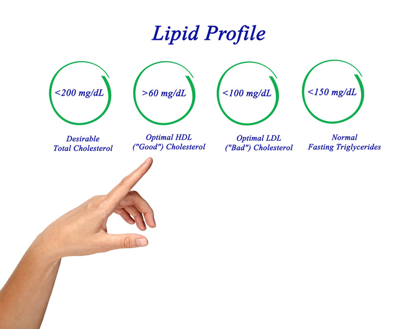
图7-4
● 脂质代谢紊乱：总胆固醇↑、LDL↑、TG↑、HDL↓ → 动脉粥样硬化
● 关键脂蛋白：
● LDL（"坏"胆固醇）：促进动脉粥样硬化
● HDL（"好"胆固醇）：运输脂质至肝脏排泄，与CAD负相关
● 非HDL胆固醇：HDL之外的总胆固醇，识别致动脉粥样硬化颗粒，优于LDL
● TG：独立风险因素，慢性升高→内皮功能障碍
诊断标准
表7-6
| 指标 | 理想 | 边缘偏高 | 高 | 非常高 |
|---|---|---|---|---|
| LDL | <100 | 130-159 | 160-189 | ≥190 |
| 总胆固醇 | <200 | 200-239 | ≥240 | — |
| HDL | ≥60（高=保护性） | — | <40（低=风险） | — |
| TG | <150 | 150-199 | 200-499 | ≥500 |
运动改善模式
表7-7
| 维度 | 处方 |
|---|---|
| 频率 | 心肺：≥5天（最大化热量消耗）；肌力：2-3天 |
| 强度 | 心肺：40-75% HRR，低于/等于/高于VT1但<VT2；肌力：50-85% 1-RM（力量）或<50%（耐力） |
| 时间 | 心肺：30-60分钟（减重建议50-60分钟）；肌力：2-4组×8-12次（力量）或12-20次（耐力） |
| 类型 | 心肺：有节奏大肌群；肌力：器械/自由重量/体重 |
关键要点
● LDL：单纯运动对LDL改善不一致，需结合减重
● HDL：心肺适能提高→HDL普遍增高；减脂可使HDL增高更多
● TG：心肺训练最有效（TG可作燃料）；肌力训练无效
● 运动量阈值：每周250-300分钟，消耗~2000千卡→多数成年人可降低体重/体脂
● 餐后脂血症（PPL）：单次中等强度运动30-60分钟→TG降低持续12-36小时→建议至少隔天运动一次
2.2 糖尿病
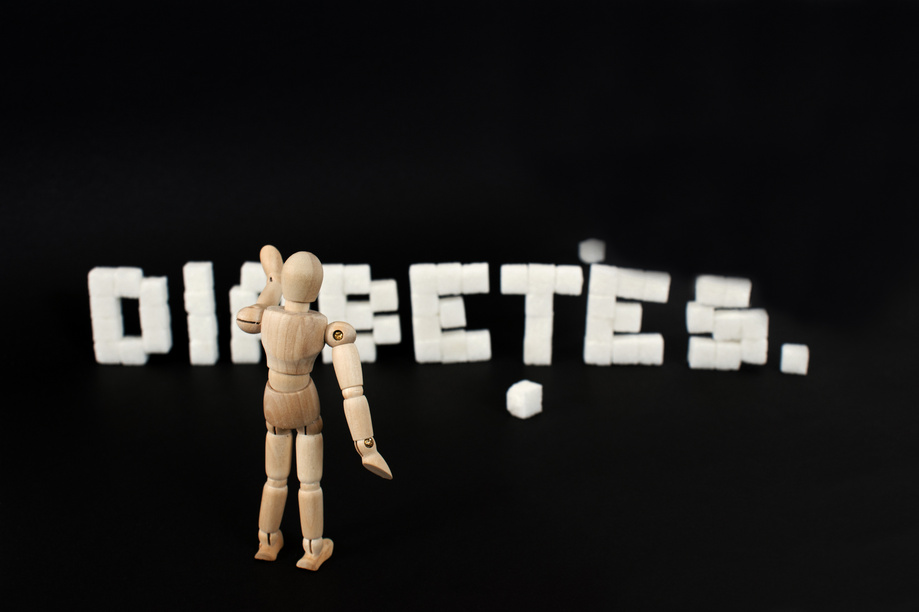
图7-5
1型糖尿病
核心机制
● 自身免疫攻击胰岛β细胞→胰岛素绝对缺乏
● 需注射/泵入胰岛素调节血糖
● 血糖控制=饮食+运动+胰岛素三者的时间/量协调
运动注意
● 运动前减少胰岛素剂量
● 运动前/中摄取易吸收碳水化合物
● 运动中/后调整胰岛素泵输注量
● 胰岛素水平高→运动时/后低血糖风险
● 胰岛素水平低→高血糖+酮症风险
2型糖尿病（>90%患者）
核心机制
● 胰岛素抵抗（细胞对胰岛素不敏感）+ β细胞相对不足→高血糖
● 与久坐、热量过剩、肥胖（尤其内脏脂肪）高度相关
● 内脏脂肪→轻度炎症→胰岛素抵抗→糖尿病/代谢综合征
症状要点
● 多饮、多尿、多食、体重下降（典型但未必要全部出现）
● 长期并发症：心脏、血管、肾脏、眼睛、足部、神经、肌肉骨骼
运动改善模式
表7-8
| 维度 | 处方 |
|---|---|
| 频率 | 心肺：3-7天（避免连续2天不运动！）；肌力：≥2个非连续日（最好3天） |
| 强度 | 中等：40-59% HRR，<VT1；剧烈：60-89% HRR，VT1至<VT2 |
| 时间 | 1型：150分钟中等/75分钟剧烈；2型：150分钟中等 |
| 肌力 | 50-85% 1-RM，1-3组×8-10次（所有大肌群，8-10个动作，接近疲劳） |
关键要点
● 不可连续2天不运动：运动对胰岛素敏感性的影响24-48小时后消失
● 心肺+肌力结合→肌肉保持更高胰岛素敏感性→更好血糖控制
● 减重5-7%即可逆转胰岛素抵抗（与全身性炎症减少有关）
● 碳水对血糖影响最大→饭后1小时血糖最高，2小时后开始下降
● 碳水化合物类型重要：单糖→血糖快速峰值；复合碳水→释放更慢
安全注意
● 1型：运动前后监测血糖，调整胰岛素和碳水摄入
● 2型：注意低血糖症状（出汗、颤抖、头晕、意识模糊）
2.3 代谢综合征（MetS）

图7-6
核心机制
● 不是单一疾病，是一组增加心脏病/糖尿病/中风风险的代谢异常簇集
● 诊断标准（出现≥3项）：
1. 腰围↑：男≥102cm，女≥88cm
4. 血压≥130/85 mmHg（或药物治疗）
5. 空腹血糖≥100 mg/dL（或药物治疗）
运动改善模式
表7-9
| 维度 | 处方 |
|---|---|
| 频率 | 心肺：≥5天（最大化热量消耗）；肌力：≥2天（最好3天） |
| 强度 | 心肺：40-59% HRR，RPE 12-13，<VT1；肌力：50-85% 1-RM |
| 时间 | 心肺：30-60分钟（减重建议50-60分钟）；肌力：1-3组×8-10次 |
| 类型 | 心肺：有节奏大肌群；肌力：所有大肌群 |
关键要点
● 主要目标是减重（尤其减少内脏脂肪）
● 运动计划参照肥胖症指南设计
● 需同时评估CAD、高血压、血脂异常等共存风险因素
● 持续性运动和间歇性运动均可
三、肺部疾病
3.1 哮喘（运动诱发性支气管收缩 EIB）

图7-7
核心机制
● 呼吸道慢性炎症→对各种刺激因素过度反应→支气管平滑肌收缩+黏膜肿胀+黏液分泌↑→气道狭窄
● 运动诱发机制：大量干冷空气进入呼吸道→呼吸道水分丢失→支气管收缩物质释放
● 80%哮喘患者运动时/后发作（EIB）
症状要点
● 喘息、呼吸困难、胸闷、咳嗽（尤其夜间/清晨）
● EIB特征：中-剧烈强度运动后呼吸道暂时变窄
● 症状在运动后5-10分钟达峰，持续20-30分钟
● 部分人运动后2-12小时出现延迟反应
运动改善模式
表7-10
| 维度 | 处方 |
|---|---|
| 频率 | 心肺：3-5天/周；肌力：≥2天（最好3天） |
| 强度 | 心肺：起始<VT1（40-59% HRR），1个月后进阶至60-70%；RPE 12-13 |
| 时间 | 逐步至30-40分钟/次 |
| 类型 | 心肺：步行、跑步、骑车、无氯泳池游泳；肌力：50-85% 1-RM |
关键要点
● 10-15分钟热身（含剧烈/间歇运动）→诱导不应期→减弱EIB反应
● 约50% EIB者有2小时不应期（期间再次运动不发作或发作减弱）
● 运动调节→减少相同任务所需通气量→呼吸道干燥减少
● 哮喘最佳反应时间：上午中间至晚些时候
安全注意
● 随身携带急救药物（支气管扩张剂）
● 运动前预防性使用药物（遵医嘱）
● 运动前/中/后充分饮水
● 避免触发因素：极热/极冷、花粉高峰、空气污染
● 低温环境可佩戴口罩保持吸入空气温暖湿润
● 密切观察哮喘发作早期体征→症状加重→降低强度→终止课程
● 药物无效→启动急救系统
四、其他慢性病
4.1 癌症
核心机制
● 正常细胞DNA受损→突变→细胞不受控增殖
● 约30%癌症死亡与5大行为/饮食风险相关：BMI高、蔬果不足、久坐、吸烟、饮酒
● 癌症幸存者三阶段：治疗期→康复后生活→晚期/临终
运动改善模式
表7-11
| 维度 | 处方 |
|---|---|
| 频率 | 心肺：3-5天/周；肌力：2-3天/周 |
| 强度 | 心肺：中等（40-59% HRR，RPE 12-13），可进阶至剧烈；肌力：从<30% 1-RM起始，~5%递增 |
| 时间 | 心肺：75分钟剧烈或150分钟中等/周；肌力：≥1组×8-12次 |
| 类型 | 心肺：步行、骑车等大肌群长时间有节奏活动；肌力：自由重量+器械+承重功能任务 |
关键要点
● 运动可改善：焦虑/抑郁、疲劳、恶心、身体功能、生活质量
● 运动可维持肌肉量、肌肉力量/耐力、心肺适能、柔韧性
● 运动可降低心脏病、骨质疏松症、糖尿病风险
● 化疗/放疗患者可能出现贫血→降低运动强度
● 骨骼完整性受损→减少负重和高强度举重
安全注意
● 运动计划个体化：癌症类型、治疗方案、当前健康状态
● 建议转介肿瘤专科注册营养师
4.2 骨质疏松症

图7-8
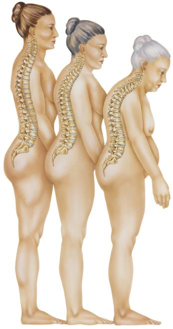
图7-9
核心机制
● 骨量低+骨微结构破坏→骨骼脆弱→骨折风险↑
● 定义：BMD低于年轻成人平均值2.5个标准差以上
● 骨量减少：BMD低于平均值1.0-2.5个标准差
● 最常见骨折部位：髋关节、脊椎、前臂远端
● 90%+髋骨折由跌倒引起
风险因素
● 不可控：遗传、女性、白种人/亚洲人、绝经后
● 可控：生殖激素、钙/维生素D摄入、身体活动、吸烟、酒精
运动改善模式
表7-12
| 维度 | 处方 |
|---|---|
| 频率 | 心肺：4-5天/周；肌力：1-2天→进阶至2-3天 |
| 强度 | 心肺：中等（40-59% HRR）；肌力：调整至最后2次重复有挑战性，高强度者可受益 |
| 时间 | 心肺：20分钟→进阶至30-60分钟；肌力：1组×8-12次→2周后增至2组 |
| 类型 | 心肺：负重大肌群（步行、爬楼梯）；肌力：骨骼负荷力运动+平衡/步态/功能性站姿运动 |
关键要点
● 物理应力→骨骼微变形→刺激骨沉积→骨量/强度↑
● 经常运动→BMD↑、跌倒/骨折风险↓
安全红线
● 避免：脊柱过度前屈、扭转、压迫动作→增加脊椎骨折风险
● 推荐：躯干伸展+腹部稳定运动
● 避免：光滑表面、绊倒危险环境、快速震动动作
● 肌力训练+负重+冲击运动（跳跃）对刺激骨量最有效
● 强调平衡训练：躯干、髋部、下肢肌肉力量
4.3 关节炎
图7-10
骨关节炎（OA）
核心机制
● 关节软骨退化（过度使用/创伤/肥胖/年龄）→软骨磨损→骨端直接摩擦→疼痛+炎症
● 最常受累关节：颈椎/腰椎、髋、膝、手指末端关节
● 美国致残主要原因
症状要点
● 运动时疼痛（随时间/强度加重）
● 局部僵硬（尤其晨起/久坐后）
● 关节肿胀、灵活性下降
● 骨刺/软骨碎片脱落→炎症→进一步软骨损伤
类风湿关节炎（RA）
核心机制
● 自身免疫性疾病：滑膜组织炎症→关节软骨/骨骼磨损→关节变形
● 全身性疾病：除关节外，还影响皮肤、眼睛、肺、心脏、血管
● 分解代谢特性→肌肉减少（必须增强受累关节周围肌肉）
运动改善模式
表7-13
| 维度 | 处方 |
|---|---|
| 频率 | 心肺：3-5天/周；肌力：2-3天/周 |
| 强度 | 心肺：中等（40-59% HRR）至剧烈（≥60% HRR）；身体状况差者30-39% HRR |
| 时间 | ≥150分钟/周低-中强度，或75分钟剧烈，或组合 |
| 类型 | 心肺：低冲击有节奏大肌群（步行、骑车、游泳）；肌力：50-80% 1-RM，2-4组×8-12次，无痛ROM内运动 |
关键要点
● 运动+减重是控制OA最佳方法（尤其超重/肥胖者）
● 运动可改善：心肺适能、肌力/耐力、关节灵活性、疲劳、日常生活功能
● RA：等长运动优先，避免关节负荷过大
● RA：低冲击、有限ROM、温水运动、发作期避免运动可能有益
安全注意
● OA：下肢关节炎不建议跑步等高冲击运动
● RA：根据功能限制和基础心肺适能调整计划
● 所有动作在无痛范围内进行
表7-14
| 各疾病关键记忆点总结 |
|---|
表7-15
| 疾病/状况 | 关键记忆点 |
|---|---|
| 冠状动脉疾病（CAD） | 避免Valsalva动作（憋气用力） |
| 高血压 | 记住三个阈值：120（正常上限）、130（1期起点）、140（2期起点）；生活方式改变可避免药物 |
| 中风 | 无特殊上下肢区分限制，重点在功能恢复（平衡/协调/步态） |
| 外周动脉疾病（PAD） | 以疼痛强度为准（非运动强度）——走至中等疼痛（跛行量表3-4级）→休息→继续 |
| 糖尿病 | 运动前减少胰岛素剂量；不可连续2天不运动（胰岛素敏感性24-48h后消失）；运动中注意低血糖症状 |
| 代谢综合征 | 诊断标准：出现≥3项（腰围↑、TG≥150、HDL↓、血压≥130/85、空腹血糖≥100） |
| 哮喘 | 最佳运动时间：上午中间至晚些时候；保持吸入空气温暖湿润；随身携带急救药物 |
| 骨质疏松症 | 肌力训练+负重+冲击运动（跳跃）；高强度会受益 |
| 骨关节炎 | 避免疼痛范围外运动；避免高冲击和扭转动作 |
各个生命阶段的运动注意事项
第 8章
ACE 教材第8章 · 各个生命阶段的运动注意事项
本章节按"核心机制/背景→运动指南（FITT）→安全注意"结构组织
跨人群通用原则
医学许可与筛查
● 所有特殊人群开始运动前需获得医学许可（尤其合并慢性病者）
● 使用PARmed-X等筛查工具进行运动前健康评估
● 慢性病患者需与医师沟通，了解运动禁忌症和限制
运动处方通用框架
● 心肺：FITT-VP（频率、强度、时间、类型、进阶、变化）
● 肌力：频率、强度、时间、类型
● 强度监控：谈话测试、RPE、VT1/VT2——不同人群适用不同监控方式
ACE IFT模型适用性
● 三大人群均可使用ACE整合式健身训练模型
● 需根据人群特点调整评估方式和计划设计
● 评估本身不必与成年人完全区分，但需注意趣味性和安全性
行为改变与社会支持
● ACE Mover Method + ABC Approach适用于所有人群
● 社会支持是坚持运动的关键因素（家庭参与、同伴鼓励）
● 运动计划设计应考虑个人目标、能量波动和日常限制
一、青少年
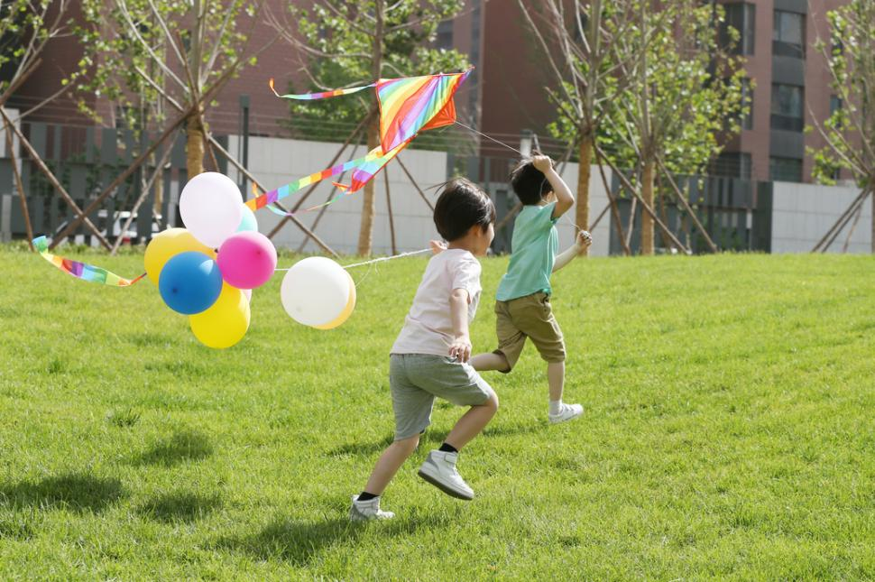
图8-1
1.1 背景与现状
核心问题
● 仅20-26%的美国青少年达到身体活动推荐水平（2018年报告卡评分D-）
● 全球青少年身体活动和久坐行为平均得分均为D
● 活动水平随年龄增长而下降：16-19岁仅5%达标
● 女孩活动参与度显著低于男孩
● 原因：学校体育要求降低、屏幕时间增加（45%高中年龄青少年每日>3小时）、社区安全性不足
缺乏活动的后果
● 儿童期肥胖、高血压、2型糖尿病、骨质疏松症、动脉粥样硬化
● 久坐习惯延续至成年→形成代际恶性循环（父母不运动→子女不运动可能性高6倍）
身体素养（Physical Literacy）
● 定义：进行身体活动的能力、信心和意愿
● 核心目标：帮助孩子掌握跑、跳、平衡等基本运动能力
● 策略：将提高身体素养作为家庭运动计划基础，强调努力而非成绩
1.2 青少年运动指南
核心原则
● 每天总计≥60分钟中等至高强度身体活动
● 包含心肺活动 + 适合年龄的肌肉强化 + 骨骼强化运动
● 每周累积总量比单一组成部分（频率/强度/持续时间）更重要
● 骨骼强化对青少年尤为重要——骨量最大增长发生在青春期前和青春期
肌肉训练的安全性与有效性
● 误区澄清：青春期前儿童可安全进行肌肉训练（在适当监督下）
● 无证据显示适当监督的渐进式肌肉训练会导致生长迟缓或骨骼损伤
● 研究数据：10个月简单肌肉训练使9岁女孩骨密度增幅达对照组4倍（6.2% vs 1.4%）
● 肌肉训练损伤风险记录优于其他体育活动
FITT建议
表8-1
| 维度 | 有氧 | 抗阻 | 骨骼强化 |
|---|---|---|---|
| 频率 | 每天 | ≥3天/周 | ≥3天/周 |
| 强度 | 大多数为中等强度（HR和呼吸明显增加）至高强度（HR和呼吸大幅增加），高强度每周≥3天 | 次极量重复8-15次，达到中度疲劳 | N/A |
| 时间 | 作为每天≥60分钟运动的一部分 | 作为每天≥60分钟运动的一部分 | 作为每天≥60分钟运动的一部分 |
| 类型 | 适合年龄的愉悦活动：跑步、游泳、骑车、跳舞、足球、篮球、网球 | 非结构化（爬树、拔河、 在运动场设备上攀爬）或结构化（自重/阻力带/器械） | 跑步、跳绳、篮球、网球、抗阻训练、跳格子 |
1.3 安全注意
肌肉训练安全指南
● 始终对儿童进行适当监督，采用正确技术
● 传统健身器材可能不适合孩子的杠杆臂——优先选择自由调节重量器材或自重运动
● 切勿鼓励单纯的大重量托举或爆发性动作
● 教导正确呼吸方式（避免Valsalva）
● 鼓励运动前/中/后充分饮水
● 告诉孩子感到疲劳/乏力/不适/痛苦时立即沟通
极端环境防护
● 高温风险因素：体表面积/质量比高、出汗能力弱、运动经济性低
● 极冷风险：脱水、低温症、冻伤——保持补水和分层穿衣
● 冷空气湿度低→加重哮喘/运动诱发性支气管痉挛
● 关注气象部门高温/寒冷警告，必要时移至室内
● 佩戴护具的运动更需注意热相关疾病
过劳性损伤与体育专业化
● 全年单一运动→重复性发力→过劳性损伤风险↑
● 多样化体育活动增强本体感受、多维力量、敏捷性、速度
● 遵循周期化原则——职业运动员不会全年不断比赛，青少年也应如此
● 运动必须适合年龄、强度适当
🔑 青少年关键记忆点
● 每天≥60分钟；骨骼强化特别重要（骨量增长窗口期）
● 肌肉训练安全（有监督）；避免大重量和爆发力
● 避免体育专业化和过劳性损伤；遵循周期化
● 高温/极冷环境需特殊防护
二、孕期与产后女性
2.1 孕期
图8-2
生理变化
身体结构与重心
● 建议增重：25-35磅（11.4-15.9kg），孕前体重不同则建议不同
● 腹围增长→背部、骨盆、髋部、腿部承受额外压力
● 重心向上向前移→影响平衡和协调性
● 孕前通过深蹲、弓步、硬举增强腿后侧和躯干力量，为增重做准备
激素变化
● 松弛素↑→骨盆增大（利于分娩）但所有关节松弛度增加→旧伤复发风险/关节不稳
● 需要力量和稳定训练增加身体稳定性
● 恶心和疲劳（妊娠早期最常见，但任何阶段都可能发生）
心血管变化
● 心力储备（静息与最大心脏功能之差）减小
● 心率、血容量、心搏量、心输出量↑（孕早期即开始）
● 短暂中等强度运动后可能感觉喘不过气→增加休息时间
● 避免静止姿势（如仰卧），因可导致静脉回流减少和低血压
体温调节
● 散热能力略有提高（皮肤血流↑+潮气量↑）
● 运动前必须知晓环境温度
● 环境温度/湿度升高→显著影响散热→可能导致高热症
● 尚无运动相关高热症引起胚胎/胎儿畸形的报告
运动指南
核心建议
● 每周≥150分钟中等强度有氧运动，至少3天
● 不论产前运动经历如何，孕期在医师指导下运动都有益且安全（ACOG 2015）
● 运动可降低：先兆子痫、妊娠期糖尿病、剖腹产、下背痛、焦虑、恶心、胃灼热、失眠、腿痛性痉挛发生率
● 孕前喜爱运动者：可继续原有计划（安全运动强度上限尚未确定）
● 孕前不爱运动者：缓慢开始，进阶至中等强度（可能需从<10分钟间歇性运动起步）
强度监控
● 谈话测试优于心率监控
● 结果<VT1 = 中等强度
● 中等强度：MET 3-5.9，RPE 12-13（6-20量表）
● 高强度（MET≥6，RPE 14-17）仅适合孕前已运动或想要提高健康水平的女性
FITT建议
表8-2
| 维度 | 有氧 | 抗阻 | 柔韧性 |
|---|---|---|---|
| 频率 | >3-5天/周 | 不连续的2-3天/周 | >2-3天/周（每天最有效） |
| 强度 | 中等（MET 3-5.9，RPE 12-13）；高强度适合孕前已运动者 | 次极量重复8-10次或12-15次，中度疲劳 | 拉伸至紧缩感或轻微不适 |
| 时间 | 每天≥30分钟，每周≥150分钟中等或≥75分钟高强度 | 初学者1组；中高级2-3组 | 静态拉伸保持10-30秒 |
| 类型 | 负重和非负重均可：徒步、团体运动、游泳（水中运动减轻腰腿压力） | 器械、自由重量、自重：坐姿推胸、哑铃、弓步 | 静态和动态柔韧性运动，每个肌群 |
安全注意
绝对禁忌——终止运动的警示性体征
● 阴道出血
● 宫缩阵痛
● 羊水泄露
● 用力前呼吸困难
● 眩晕或感到昏晕
● 头疼
● 胸痛
● 影响平衡的肌无力
● 小腿疼痛或肿胀
运动禁忌与避免事项
● 避免高风险/可能腹部创伤的运动（接触性项目、滑雪、冲浪）
● 避免极端高温环境（如热瑜伽）
● 避免长时间仰卧姿势
● 某些运动可能需要调整或与产科护理者讨论（慢跑、球拍运动等）
营养与补水
● 运动前后充分补水
● 运动前吃小零食避免低血糖（尤其中等强度>45分钟时）
● 平衡热量摄入
腹直肌分离（Diastasis Recti）
● 腹直肌两肌腹分离，可达1-2英寸（2.5-5.1cm）
● 孕期发病率高达45%，产后12个月仍达33%
● 孕前和孕期运动可减少35%发病率
● 推荐运动：腹横肌等长收缩、姿势肌和腹部力量训练
● 注意评估腹直肌分离情况后再设计核心训练
2.2 产后

图8-3
核心要点
恢复原则
● 分娩体验因人而异，产后激素水平继续变化
● 疲劳常见（激素变化+身体需求+睡眠中断）
● 产后贫血常见→与生活质量下降、认知能力减弱、情绪不稳/抑郁相关
● 剖腹产需额外恢复时间（开刀手术）
● 流产和死产的悲痛支持：25%妊娠以流产告终，1%死产
运动恢复指南
● 产后几天/几周内，根据医生建议逐渐增加运动量
● 慢慢开始：先增加持续时间和频率，再增加强度
● ACOG建议每日20-30分钟（步行+简单主要肌群强化）
● 异常疼痛（尤其外阴切开术/剖腹产后）→停止运动并咨询医师
● 比正常月经更重的鲜红阴道流血→停止运动并就医
● 目标：9-12个月回到孕前运动强度水平
哺乳期注意
● 热量和营养需求增加→需同时满足运动和母乳需求
● 充分饮水
● 长时间抱孩子→头部前倾和圆肩风险↑
● 计划设计应包括：后背与后肩运动（坐姿划船）+ 前肩和胸肌拉伸
计划设计重点
● 考虑剖腹产伤口愈合或腹直肌分离情况
● 增加躯干力量和稳定性运动
● 制定简单的10分钟可完成运动计划（照顾孩子时间有限）
● 鼓励多散步（可带孩子一起）
🔑 孕期与产后关键记忆点
● 孕期：每周≥150分钟中等强度，谈话测试监控（<VT1）
● 孕期：避免仰卧、高温环境、接触性运动
● 孕期：警示性体征9项（见上方清单）
● 松弛素影响所有关节→关节不稳风险↑
● 腹直肌分离：孕期发病率45%，运动可减少35%
● 产后：慢慢开始，9-12个月回到孕前水平
● 产后：关注哺乳期营养补水+圆肩/头部前倾
三、老年人

图8-4
3.1 衰老的结构性变化
肌肉骨骼系统
● 肌肉质量↓→力量和耐力↓（生活方式变化+神经肌肉功能减弱）
● 骨骼更脆弱多孔→骨折风险↑
● 钙损失→骨量下降（负重和肌肉训练可维持）
● 约20%髋骨折老年人死于相关并发症
● 瘦体组织↓ + 体脂↑ + 基础代谢率↓
平衡与稳定性
● 三大平衡系统均受衰老负面影响：
● 视觉系统（最主要的本体感受输入通道）→衰退
● 前庭系统（头部空间位置信息）→功能下降
● 躯体感觉系统（肌肉/关节本体感受器、皮肤/压力感受器）→功能下降
● 平衡和协调性↓→跌倒和相关损伤风险↑
认知与心理健康
● 认知能力下降→平衡能力、注意力、专注力下降
● 抑郁症和焦虑症风险↑
● 失去家人朋友→社会化程度↓
● 身体活动可预防和减缓认知能力衰退（50岁以上人群，无论初始认知状态）
● 运动为老年人提供社交机会和挑战/目标
3.2 老年人运动指南
核心建议
● 每周150-300分钟中等强度 或 75-150分钟高强度 或 两者结合
● 最好将时间分散开
● 多做身体活动可获得额外益处——做些运动总比不做的好
● 缺乏定期运动计划时：一天中多动少坐
● 每周≥2次肌力训练（主要肌群），维持或增加力量和耐力
● 平衡训练必须纳入运动计划→提高本体感受，降低跌倒风险
FITT建议
表8-3
| 维度 | 有氧 | 抗阻 | 柔韧性 |
|---|---|---|---|
| 频率 | 中等：>5天/周；高等：>3天/周；结合：3-5天/周 | ≥2天/周 | >2天/周 |
| 强度 | 0-10量表：中等5-6，高等7-8 | 初学者低强度（40-50% 1-RM）→逐渐过渡至中高等（60-80% 1-RM）；或0-10量表中等(5-6)至高等(7-8) | 拉伸至紧缩感或轻微不适 |
| 时间 | 中等30-60分钟/天；高等20-30分钟/天；可多次累计（每次≥10分钟） | 8-10个动作，1-3组×8-12次 | 保持30-60秒 |
| 类型 | 不带来过多压力的运动：散步；负重困难者选水上运动/固定式自行车 | 渐进式训练、负重健美操、爬楼梯 | 慢速静态拉伸，每个肌群 |
3.3 安全注意与计划设计
评估调整
● 关节炎在65岁以上人群中发病率49.6%——极常见
● 评估顺序建议：先做姿势和柔韧性评估→再调整运动评估
● 膝关节炎客户可能不适合自重深蹲→可改用坐下/站起测试
● 平衡评估：安全第一，单脚站立优于Y平衡测试
● 初始可借助墙壁/门框等外部稳定装置→进阶到拐杖/手杖→最终无外力支持
计划设计重点
● 热身更重要（胶原含量↓+缔结组织弹性↓）→减少受伤风险
● 放松时间用于静态拉伸（肌肉紧张妨碍灵活性/ADL时）
● 平衡运动应在课程早期引入——此时力量最高、专注度最高、受伤风险最低
● 重点放在功能训练上
● 考虑客户能否正常俯身和起身（按摩床/椅可能有用）
● 负重运动首选（在承受范围内）→强化骨骼
● 固定式/卧式自行车：低中心栏方便上下
● 不要为客户设限——激发冒险精神和成就感
● 慢慢增加持续时间和运动量
🔑 老年人关键记忆点
● 150-300分钟中等强度/周；平衡训练必须纳入
● 20%髋骨折老年人死于并发症；负重运动强化骨骼
● 关节炎发病率49.6%（65岁以上）——先评估姿势和柔韧性
● 热身比以往更重要（胶原↓、弹性↓）
● 平衡训练放在课程早期（专注度最高时）
● 运动可预防认知衰退、改善心理健康
各人群关键记忆点总结
表8-4
| 人群 | 关键记忆点 |
|---|---|
| 青少年·活动量 | 每天≥60分钟中等至高强度；骨骼强化在青春期前/青春期尤为重要（骨量增长窗口期） |
| 青少年·肌肉训练 | 安全（有监督时）；避免大重量和爆发力；优先自重/阻力带 |
| 青少年·风险 | 避免体育专业化和过劳性损伤；遵循周期化；高温/极冷环境特殊防护 |
| 孕期·运动量 | 每周≥150分钟中等强度，至少3天；谈话测试监控（<VT1） |
| 孕期·禁忌 | 避免仰卧、高温环境、接触性/高跌落风险运动；注意9项警示性体征 |
| 孕期·激素 | 松弛素↑→所有关节松弛→关节不稳；力量和稳定训练对抗 |
| 孕期·腹直肌分离 | 孕期发病率45%；运动可减少35%；推荐腹横肌等长收缩 |
| 产后·恢复 | 慢慢开始，9-12个月回到孕前水平；剖腹产需额外恢复时间 |
| 产后·注意 | 哺乳期需更多热量/水分；关注圆肩/头部前倾；加入后背和后肩运动 |
| 老年人·运动量 | 150-300分钟中等强度/周；平衡训练必须纳入；≥2次/周肌力训练 |
| 老年人·骨骼 | 20%髋骨折老年人死于并发症；负重运动在承受范围内强化骨骼 |
| 老年人·关节炎 | 65岁以上发病率49.6%；先评估姿势和柔韧性，再调整运动评估 |
| 老年人·计划设计 | 热身比以往更重要；平衡训练放在课程早期；重点放在功能训练 |
| 老年人·认知 | 运动可预防和减缓认知衰退，改善心理健康，提供社交机会 |
肌肉骨骼异常客户的注意事项
第 9章
ACE 教材第9章 · 肌肉骨骼异常客户的注意事项 · 重点总结
本章节按"核心机制→症状要点→课程设计/安全注意"结构组织
跨病症通用原则
执业范围
● 私人教练的职责是运动评估，不是损伤评估/诊断
● 客户出现疼痛或受伤，必须转介给医疗保健专业人员
● 与医生/理疗师保持沟通，获取运动限制和恢复方案
愈合三阶段
表9-1
| 阶段 | 时间 | 特征 | 运动 | 禁忌 |
|---|---|---|---|---|
| I 炎症期 | 前3-4天 | 发红、肿胀、疼痛、局部发烫 | 零负重，主动ROM | 患处疼痛/肿胀时禁止训练 |
| II 修复期 | 3天-6周 | 瘢痕初步形成 | 耐受范围内负重，缓慢无痛运动 | — |
| III 重塑期 | 4周-2年 | 瘢痕组织力量增加 | 循序渐进无痛运动 | — |
● 急性期标准处理：RICE（休息Rest、冰敷Ice、压迫Compression、抬高Elevation）
● 冰敷：间接接触皮肤，每次≤20分钟，前24-48小时冰敷（非热敷）
● 压迫：弹性绷带包扎受伤部位，控制肿胀；绷带应扎牢但不可太紧（以免阻碍静脉血回流）
● 抬高：至心脏水平以上，有助于静脉血回流
伤后训练进度
● 训练进度须始终维持保守态度
● 与医生/理疗师保持联系，获取禁忌动作建议和推荐运动恢复方案
● 严格执行无痛训练课程后，组织重塑可功能完全恢复且无症状
● 受伤部位疼痛 = 应立即停止运动
疼痛管理
● 使用知觉疼痛等级量表（0-10级）
● 疼痛超过3级即停止运动（3级尚未引起不适/痛苦）
● 训练前及训练中持续评估疼痛等级
● 慢性疼痛会造成生物、心理和情绪影响（愤怒、绝望、抑郁、焦虑）
● 与客户沟通疼痛管理要点：
1. 锻炼前说明可能触及患处
2. 解释疼痛等级量表
3. 说明超过3级将中止锻炼
4. 鼓励客户交流任意程度的疼痛
5. 让客户在训练前及全程评估疼痛级别
预防肌肉骨骼损伤
● 柔韧性和弹性：损伤后瘢痕组织降低弹性；长期不运动、放疗、年龄增长均导致弹性下降；弹性差既是损伤成因也是后果
● 热身活动：覆盖所有运动平面，激活本体感受器，增加血流和结缔组织弹性；全方位预备操优先于单平面活动（如步行/骑行）
● 恢复：两节训练课之间留出充分修复时间；拉伸和自我肌筋膜放松舒缓僵硬肌肉
课程设计通用框架
● 热身更为重要（胶原↓、弹性↓），需覆盖所有运动平面
● 先解决ROM受限和姿势不良，再进阶
● 动力链思维：相邻关节功能障碍会影响远端
● 恢复期计划必不可少：组织修复+关节ROM
● 静态拉伸放在锻炼结束时（长时间拉伸后神经抑制、力量↓）；
● 若需抑制过度活跃肌肉/调整姿势，可在简单热身后先做静态拉伸
● 积极恢复计划是成功计划的重要部分
康复期肌肉和心肺训练注意事项
表9-2
| 损伤类型 | 可做的肌肉训练 | 可做的心肺训练 | 应避免 |
|---|---|---|---|
| 下肢损伤 | 上半身：坐位或卧位训练；下半身：按理疗师/医生指示；脊柱和髓核：不涉及患肢的训练 | 水中运动；上肢测力计；卧式/固定式自行车 | 任何引起疼痛的动作；负重训练（除非获医生/理疗师允许） |
| 上肢损伤 | 下半身：不涉及患肢的训练；上半身：按理疗师/医生指示；脊柱和髓核：不涉及患肢的训练 | 步行；卧式/固定式自行车；椭圆机 | 任何引起疼痛的动作；跑步（动力链影响可能致患肢疼痛）；需双手保持稳定性的训练 |
| 背部/脊柱损伤 | 理疗师/医生指示的练习和拉伸；可承受范围内的负重训练 | 水中运动；步行；卧式/固定式自行车 | 任何引起疼痛的动作；高频重复动作组（重复8-10次，避免疲乏）；负重脊柱旋转；需接触地面的运动（条件允许可垫高或用按摩椅） |
一、急性损伤
1.1 肌肉拉伤（Strain）
核心机制
● 肌肉超限工作→肌纤维撕裂；任何类型的用力都可能发生
分级
表9-3
| 级别 | 严重程度 | 体征 | 功能 |
|---|---|---|---|
| I级 | 轻度 | 轻度疼痛/酸痛，微量肿胀 | 肌力正常 |
| II级 | 中度 | 疼痛肿胀更严重，ROM↓ | 肌力↓，可能跛行 |
| III级 | 重度 | 肌肉完全撕裂，"撕裂/断裂"感，明显变形 | 功能丧失 |
● III级拉伤在老年人中更常见（胶原组织失去弹性）
● 愈合时间取决于严重程度；轻度损伤愈合各阶段可持续数日至数周；III级可能需要外科干涉
● 随年龄增长，即使轻度拉伤也需更长时间愈合
1.2 韧带扭伤（Sprain）
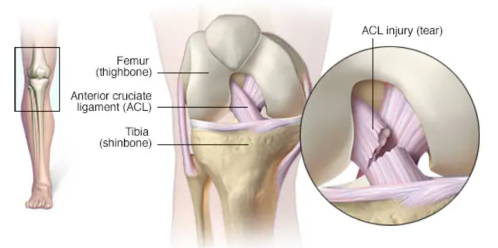
图9-1
核心机制
● 外力将韧带拉伸至损伤点（接触性或非接触性）
● ACL撕裂机制：膝关节过伸和/或扭伤
● 接触性：如橄榄球中膝前侧和外侧的撞击产生剪切力
● 非接触性：如篮球中踩硬地面同时突然切球和扭动
● 包含全方位力量和稳定性训练可降低非接触性损伤风险
分级
表9-4
| 级别 | 身体检查 | 功能损伤 | 病理 | 急性护理 |
|---|---|---|---|---|
| I级 | 轻微触痛/肿胀 | 轻微 | 胶原纤维微观撕裂 | RICE |
| II级 | 中度触痛/肿胀，ROM↓，可能不稳定 | 中度 | 部分胶原纤维完全撕裂 | RICE+医生评估 |
| III级 | 明显肿胀/触痛/不稳定 | 重度 | 韧带完全撕裂/破裂 | 空气夹板+RICE+立即就医 |
● 客户可能报告听到"砰砰"声后随即出现疼痛和肿胀
● II级扭伤出现不稳定、ROM下降和功能丧失
1.3 软骨损伤

图9-2
核心机制
● 关节受压迫+剪切力→软骨撕裂
● 膝关节最易发生（负重+活动自由度大）
● 年长者关节软骨已退化，较小的力即可撕裂
● 大部分软骨无血管→无法自行愈合，常需手术取出撕裂碎片
● 例外：半月板外侧1/3血管丰富，可手术修复（需较长术后零负重状态）
症状：关节僵硬、咔嗒/砰砰声、腿软、伸直受限、关节闭锁、疼痛肿胀、肌肉无力
1.4 骨折
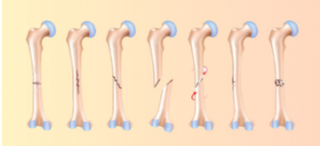
图9-3
核心机制
● 压迫力（如伸直腿踩硬表面）、扭力或直接撞击导致
● 骨质疏松/骨癌/感染/放疗/骨量差者风险更高
体征：喀嚓声、变形、肿胀、淤青、疼痛触痛
紧急处理
● 防止骨骼和软组织进一步受伤，必要时急救应对休克
● 怀疑骨折应立即启动EMS，控制环境让客户静卧休息
● 冰敷可能加剧疼痛
● 仅在偏远地区EMS无法到场时，才用急救技能夹住/固定骨折肢
应力性骨折
● 骨形成/吸收失衡→反复应力→骨头不足以承受压迫力
● 所有骨头均可发生，股骨颈时有发生，胫骨最常见（常被误认为外胫夹）
● 长跑运动员高风险（骨量未及调整即增加里程）
● 特征：骨头某点触痛，疼痛局部且渐进，负重时加重；某些情况下静息/睡觉时也会酸痛，甚至局部肿胀
● 继续活动→加重→完全骨折风险
● 骨癌症状可能与应力性骨折相似，尽早诊断很重要
1.5 脑震荡

图9-4
核心机制
● 脑损伤导致精神状态改变（接触性运动、交通事故、跌倒或撞击均可引起）
● 可能伴随或没有短暂性意识丧失
体征
● 精神错乱、定向障碍、记忆丧失（重复提问、无法认人/识别地点）
● 言语迟钝/不清、动作不协调、头疼、恶心呕吐
● 警觉性降低、平衡感下降、眩晕、惊厥、四肢麻木/失去知觉
关键风险
● 脑震荡后脑部极脆弱→二次损伤可导致二次撞击综合征（危及生命）
● 必须立即停止活动
● 获有头部损伤治疗经验的合格医疗保健专业人员书面许可前，禁止任何活动
● 许可同时应提供书面活动恢复方案；恢复要循序渐进，私人教练需格外小心防症状复发
1.6 椎间盘损伤

图9-5
核心机制
● 椎间盘位于两椎骨之间，起减震、支撑和稳定作用，由胶原组成
● 压迫+剪切力→纤维环层撕裂→髓核胶状液渗漏→外层形成肿块
● 膨胀的外层压迫神经或卡在椎骨间→沿神经走向牵涉痛/剧烈疼痛
● Valsalva动作增加受伤风险（打喷嚏/咳嗽同理）
● 常见于腰椎
症状
● 可能出现坐骨神经痛或其他神经根病体征
● 沿受累神经走向剧烈刺痛、麻木和/或痛感，可能延伸至足部
处理：冰敷缓解疼痛，但需立即就医；客户可能疼到不能走路，需联系EMS转运至急诊室
二、过度使用症
2.1 肌腱炎/滑囊炎/筋膜炎
表9-5
| 病症 | 定义 | 成因 |
|---|---|---|
| 肌腱炎 | 肌腱炎症（-itis = 炎症） | 过度使用；急性→可转为慢性 |
| 滑囊炎 | 滑囊发炎 | 急性外伤有时引起；更多是反复应力/肌肉失衡/肌紧张 |
| 筋膜炎 | 结缔组织（筋膜）发炎 | 常见：足底筋膜炎、IT束摩擦综合征 |
● 急性肌腱炎 = 处于损伤愈合炎症阶段的肌腱炎
● 处理不当均可转为慢性
2.2 应力性骨折

图9-6
● 骨形成/吸收失衡处发生
● 长跑运动员高风险（骨量未及调整即增加里程）
● 胫骨最常见，常被误认为外胫夹
● 关键鉴别：应力性骨折为骨头某点触痛，疼痛局部、渐进、负重加重
● 某些情况下静息/睡觉时酸痛，甚至局部肿胀
● 继续活动→症状加重→完全骨折风险
● 需转介给医生诊断和治疗（骨癌症状可能类似，需排除）
三、上肢病症
3.1 肩部——肩峰撞击综合征/肩袖损伤

图9-7
核心机制
● 肩关节窝浅→骨稳定性差，靠盂唇+韧带+肩袖加固
● 肌肉力量/稳定性不足 + 不良姿势（圆肩/胸椎后凸）→肩胛骨偏离（偏向上侧和前侧）→肩峰下间隙变窄
● 冈上肌腱鞘+肩峰下滑囊被压迫→肩峰撞击综合征
● 可伴肱二头肌长头肌腱炎
● 肩袖弹性↓→肩袖撕裂（发生率随年龄↑）
● 肩袖肌肉作用：在过头运动中降低肱骨向前速度并稳定肱骨在关节窝中
● 多数人其他软组织可代偿→即使全层肩袖撕裂也可选择保守治疗和物理疗法而非手术
课程设计四步法
1. 解决不良姿势（圆肩/脊柱后凸）→伸展肩部前侧和前胸（抑制过度活跃肌肉，可在热身时完成）
2. 强化肩胛骨稳定肌（下斜方肌、中斜方肌、前锯肌）+肩袖
3. 通过受控前推动作改善肩前肌肉和胸大肌
4. 最后引入过头运动（在肩胛面——额状面前30°完成，防撞击/挤压）
关键动作
● 坐姿划船（强化肩胛稳定肌）
● 前锯肌推举
● 鸟狗式（闭链负重训练，激活肩袖而不使组织恶化）
● 农夫行走（开链训练，激活肩袖）
注意事项
● 应避免需要举过头的训练（稳定性和力量需求超出受损肩关节能力）
● 过头动作使肱骨头与肩峰接触更紧密，增加撞击风险
● 上半身整体力量、稳定性和ROM训练应纳入常规项目，预防疼痛和功能丧失
3.2 肘、腕和手
背景
● 工作及休闲中长期使用鼠标和键盘→过度使用损伤日渐增多
● 归咎于长时间静负荷及不恰当的办公设置
3.2.1外上髁炎（网球肘）
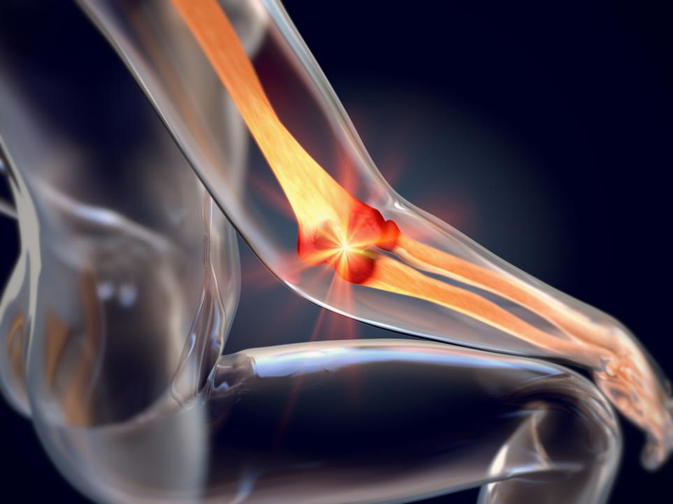
图9-8
● 肱骨外上髁起点附近→腕伸肌肌腱过度使用或反复外伤性损伤
● 30-55岁成年人常见
3.2.2内上髁炎（高尔夫球肘）
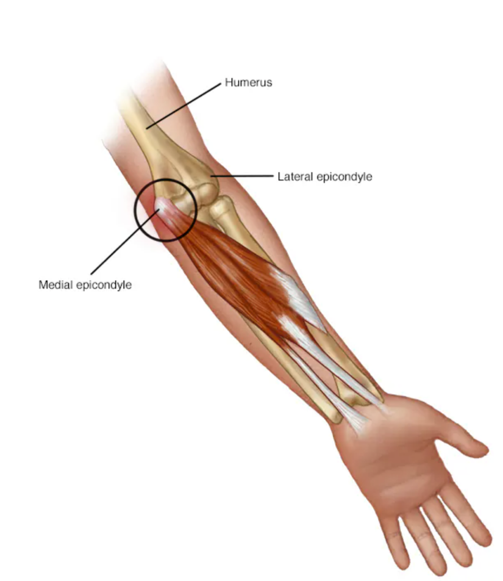
图9-9
● 肱骨内上髁→腕屈肌肌腱在起始处附近的过度使用或反复外伤性损伤
● 30-55岁成年人常见
3.2.3腕管综合征
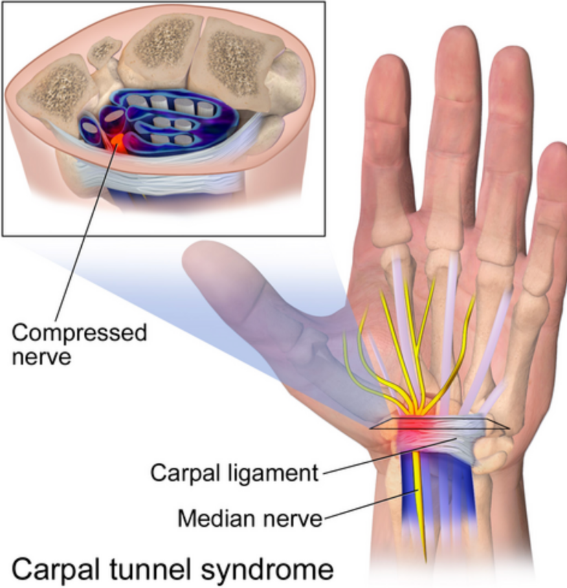
图9-10
● 屈肌支持带下肌腱发炎→腕骨和屈肌支持带之间狭小间隙内炎症刺痛腕管→压迫正中神经→疼痛和麻木
● 建议客户向人力资源部申请工作环境的人体工程学评估
课程设计注意事项
● 肌腱发炎时应避免增加压力，消除所有可导致疼痛或不适的因素
● 需要腕部屈曲、伸展或握紧的训练需进行调整
● 腕管综合征适用与肘腱炎相同的注意事项
● 训练时使用夹板或矫形器可能有益（尤其持续疼痛的客户），但需由医生定夺
● 运动时应穿戴医生推荐和指定的手腕托，并遵从指导
课程设计四步法
1. 预防过度使用：牵引训练时引入多种手柄增加舒适感，和/或戴手套增加手与手柄/器械之间的摩擦力（减轻受损组织负荷）
2. 在各运动平面上缓慢拉伸，增加ROM
3. 通过训练改善腕部和手部力量（如俯卧撑、腕部屈伸）
4. 取下手柄或手套，在耐受范围内逐步增加牵引训练重量
3.3 肘/腕/手病症关键记忆点
● 网球肘 = 外上髁 + 伸肌肌腱；高尔夫球肘 = 内上髁 + 屈肌肌腱
● 腕管综合征 = 正中神经受压→疼痛麻木；需人体工程学评估
● 训练调整：多种手柄/手套/腕带减少握力需求
● 调整使腕部处于中间位置的训练项目（如正手窄握支撑架做俯卧撑）
四、脊柱病症
4.1 颈部

图9-11
核心机制
● 胸椎后凸加重→头部前倾姿势→颈部肌肉异常压力
● 脊柱通过骨性凸起物和软组织连接→任一位置错位引起连锁反应
● 示例：右侧腰骶段的竖脊肌（ace课本为这个骶竖肌，但不符合解剖学规范用语，特此标注。）紧张→右外侧屈曲→右肩抬高→左侧颈痛
● 解决动力链全段缩短的组织，不只是患处
● 单独强化颈部肌肉不应作为训练课程目标
课程设计步骤
1. 观察颈部相对胸椎和肩部位置→先矫正脊柱和肩部（圆肩和脊柱后凸尤其常见）
2. 教授柔和动作和拉伸（侧向拉伸、旋转拉伸）→客户感到不适时可随时进行
3. 疼痛严重或持续→转介给医生
4.2 下背部

图9-12
核心机制
● 80%成人会出现下背部疼痛，30%转为慢性
● 最常见于30-50岁人群；主要致残原因之一
● 常见原因：肌肉拉伤、长期静态姿势不良引起的软组织应激、身体素质差、椎间盘疾病、骨关节炎、类风湿性关节炎、强直性脊柱炎、癌症
● 明显脊柱前凸→腰骶段的竖脊肌（ace课本为这个骶竖肌，但不符合解剖学规范用语，特此标注。）+髋屈肌紧张+后侧链无力→下背部僵硬/疼痛
● 髋部灵活性不足→腰椎ROM代偿性增加（腰椎应保持不动）
● 竖脊肌是稳定肌，不是强大伸肌；臀肌和腘绳肌才是真正的髋伸肌
● 椎间盘损伤常发生在腰椎→可能出现坐骨神经痛/神经根病
关键肌肉对躯干/骨盆稳定性的作用
表9-6
| 肌群 | 功能 |
|---|---|
| 臀大肌 | 髋伸肌；支撑骨盆和躯干稳定；保持正确骨盆位置 |
| 腘绳肌 | 髋伸肌；支撑骨盆和躯干稳定；紧张时抑制髋铰链→骨盆后倾 |
| 腹直肌 | 稳定躯干；保持正确骨盆位置 |
| 腹内/外斜肌 | 稳定躯干；保持正确骨盆位置 |
| 背阔肌 | 附着胸腰筋膜→为腰椎提供稳定性 |
| 髋屈肌 | 紧张时抑制髋铰链→骨盆前倾 |
| 髋内旋肌 | 紧张时抑制髋铰链→骨盆前倾 |
| 髋外旋肌 | 紧张时抑制髋铰链→骨盆后倾 |
课程设计四步法
1. 纠正左右侧不平衡
2. 纠正前倾/后倾不良姿势（骨盆前倾或后倾）
3. 增加髋关节功能性内/外旋程度（如伐木训练向下=内旋，向上=外旋）
4. 强化后侧链肌群（尤其腘绳肌和臀肌）
日常脊柱稳定训练（每天都进行最有效）
● 猫牛式：有节律动作改善柔韧性并给组织热身；是动作训练非拉伸，重点在动作而非推到极限；猫式呼气，牛式吸气，中立位换气
● 改良式卷腹：保持腰椎中立位（手/毛巾垫于腰下）；一只膝弯一只腿伸直，锁定骨盆-腰椎位置；中间点交替弯曲腿
● 鸟狗式：双手对肩、双膝对髋→找到脊柱中立位→腹 muscles 保持稳定→对侧手臂和腿同时抬起→每侧保持5-8秒改善肌肉耐力
● 侧桥：腰方肌和腹部斜肌实现最佳稳定性；初级=肘+膝支撑→进阶=肘+脚支撑；维持颈部和脊柱中立位；每侧保持5-8秒
● 下背部训练：耐力优先于力量（慢缩姿势肌有保护作用）
● 重复低难度动作增强姿势耐力和力量
下蹲动作要点
● 下蹲是ADL中必要的动作模式（坐椅子、进出车辆、使用马桶）
● 常见缺陷：髋关节铰链协调性缺乏+后侧链肌群力量缺乏→膝盖向前超过脚趾→膝关节疼痛+下背部承受不必要压力
● 调整方案：
● 椅式（适合稳定性/力量/ROM不佳者）：握住固定物站在箱子/长凳前，向后向下坐；先屈髋再屈膝，双脚紧踩地面；可垫高座位降低难度；增大难度时减少手臂借力/降低箱子高度
● 自重深蹲（适合稳定性/力量/ROM尚可者）：侧重正确髋铰链和膝关节对齐；出现膝外翻时提醒向地面用力激活稳定肌
● 弹力带深蹲（适合准备增加后侧链力量但未准备杠铃/哑铃深蹲者）：弹力带抵消部分体重提供支撑；全程需后侧链和脊柱稳定肌对抗向前拉力
五、下肢病症
5.1 髋关节
背景
● 球窝关节，可进行多方向运动；髋臼是较深的骨性关节窝
● ROM有限，与关节囊和肌肉结构一起产生显著稳定性
● 久坐使髋部前侧肌肉缩短、后侧拉长→影响关节铰链能力
● 功能障碍可能上移至下背部或下移至膝部
梨状肌综合征
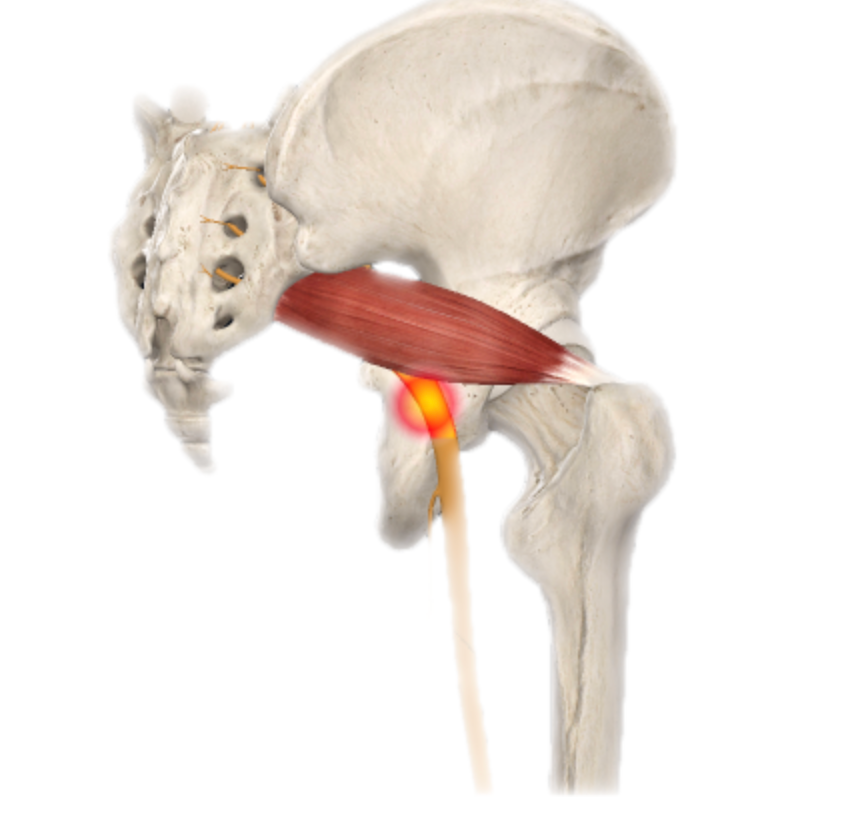
图9-13
● 梨状肌发紧/紧绷/发炎→压迫穿过梨状肌的坐骨神经和孖肌→类似腰椎间盘损伤的神经根病症状
● 22%人群坐骨神经隔断（穿过）梨状肌→更易患病
● 至少6%"下背痛"患者实际为梨状肌综合征
● 梨状肌作用：步行中充当髋外旋肌，稳定股骨头
● 评估要点：关注髂脊高度→评估骨盆位置及与股骨相对位置
● 示例：左侧骨盆高→左侧股骨相对骨盆内收+内旋→左侧肌肉被拉紧（IT束、外旋肌群、臀大肌）→坐骨神经受压
● 课程设计：平衡左右骨盆位置（紧张侧静态拉伸+紧绷侧强化）+髋关节闭链内外旋训练（改善灵活性和稳定性）
髋关节炎/髋关节置换术
● 关节炎：慢性疾病，关节疼痛和发炎
● 稳定性和强化训练可改善动作，提高ADL效率
● 保守治疗失败可建议髋关节置换术/全髋关节成形术
● 术后前几个月接受常规理疗；理疗结束后ROM可能与非手术侧不等
● 卧式自行车：改善心肺+ROM+股四头肌力量（优于固定式自行车，屈曲程度更大，更好挑战ROM）
● 固定式自行车：屈曲程度较小，适合努力恢复ROM的客户
● 柔和拉伸和动态ROM练习可鼓励进行，但期望须符合实际
髋关节课程设计四步法
1. 纠正左右侧不平衡
2. 改善髋关节内/外旋ROM+单脚站立稳定性
3. 改善髋关节铰链灵活性和稳定性
4. 改善后侧链肌群力量
注意：每一侧训练和伸展不同——一侧紧张肌肉做伸展，对侧较弱肌肉做强化；尽早在锻炼中加入静态拉伸（简单热身后），抑制紧张肌肉、增加ROM
5.2 膝部
背景
● 典型铰链式关节，但有2-3度旋转；由强健韧带和筋膜支撑，灵活性高（可弯曲至130°）
● 唯一穿过膝关节的肌腹是腘肌；其他移动/固定膝关节的肌肉以肌腱形式穿过
● 软骨损害和韧带扭伤常见
5.2.1髂胫束（IT束）摩擦综合征

图9-14
● IT束远端与股骨外侧上髁反复摩擦→膝外侧烧灼/刺痛（剧痛或刺痛）
● 15-50岁活跃人群常见（跑步者、骑行者、排球/举重运动员）
● 风险因素：过度使用、装备不当/鞋子不合脚、跑步平面改变、肌力失衡（无力或紧张）、结构异常（扁平足、膝外翻、下肢不等长）
● 骨盆失衡→IT束紧绷→增加与股骨外侧上髁接触
● 左侧骨盆高→左侧IT束紧绷
● 右侧阔筋膜张肌紧张→也可增加IT束与股骨外侧上髁接触
● 课程设计：紧张侧自我肌筋膜放松+静态伸展→纠正骨盆失衡→增加ROM和纠正左/右侧失衡
5.2.2膝部肌腱炎

图9-15
● 常见部位：髌腱、鹅足腱、股四头肌腱
● 跑步/上下楼梯/下蹲时疼痛
● 存在膝关节功能障碍时，关注髋关节、踝关节和足部（膝关节依赖临近关节保持稳定和缓冲地面反作用力）
● 足部旋前/旋后静态姿势评估→发现失衡→立即选择适当训练强化ROM或增强训练
● 髌骨肌腱炎时：四头肌很可能紧张→增加髌骨与股骨髁间压力→自我肌筋膜放松+伸展解决
● 肌肉训练侧重后侧链力量恢复（腓肠肌、腘绳肌、臀肌）
● 与客户保持沟通疼痛等级，疼痛限制时停止训练
5.2.3髌股疼痛综合征（PFPS）
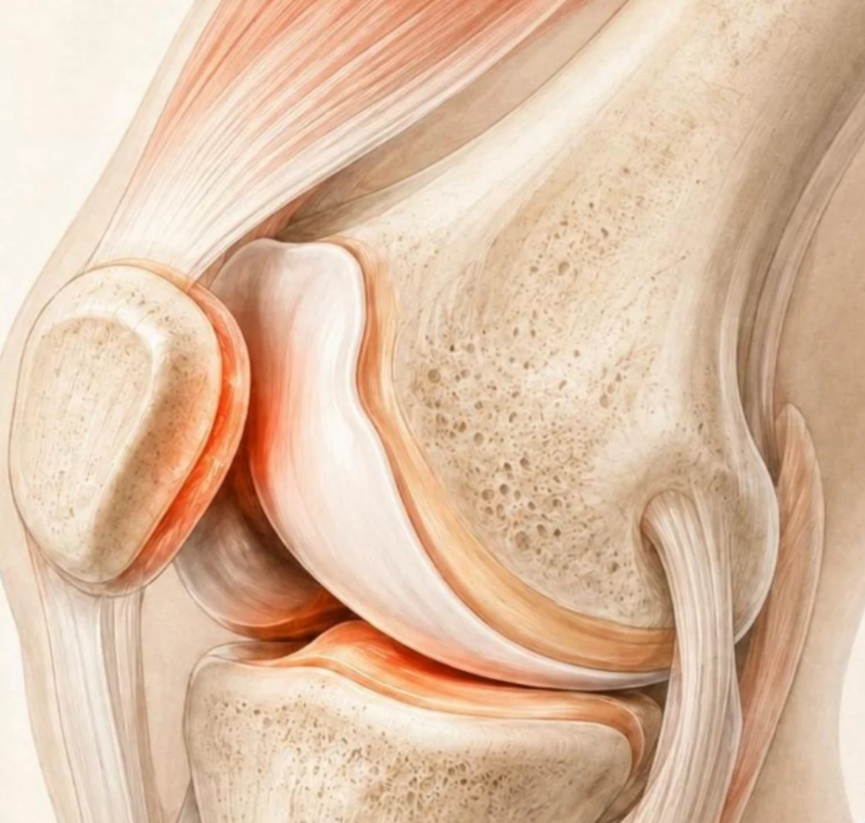
图9-16
● 过度使用+生物力学改变+肌肉功能障碍→髌骨轨迹异常→软骨磨损→髌骨软骨软化
● 关键机制：膝关节屈曲时股骨内旋失控（膝外翻/X形腿）或IT束紧张将髌骨拉出滑车沟
● 下楼/下坡时疼痛加剧
● 生物力学异常因素：
● 扁平足→改变膝关节排列→胫骨/股骨代偿性内旋→改变髌股关节动力学
● IT束紧张→通过筋膜对髌骨产生过度横向力
● 腓肠肌/比目鱼肌紧张→代偿性内转+过度后向力→髌股关节压力↑
● 相关肌无力：
● 髋外展肌和外旋肌无力→活动时股骨内旋+膝外翻→髌股轨迹异常
● 需要四头肌减缓膝关节屈曲的活动（下楼梯、步行跑下坡）时，髌骨和股骨间隙变窄→疼痛加剧
● 课程设计四步法：
1. 纠正左右侧不平衡
2. 解决髋部/踝部/足部肌紧张和不稳定（防止股骨内旋）
3. 改善髋关节铰链灵活性和稳定性
4. 改善后侧链肌群力量
● 注意：开链膝关节伸展（坐位膝关节伸展）对单膝疼痛者应避开→选择负重闭链训练
膝关节炎/膝关节置换术
● 稳定性和强化训练可改善动作，提高ADL效率
● 保守治疗失败可建议膝关节置换术/全膝关节成形术
● 术后四头肌强化很重要，自行车训练课程有帮助
● 全膝关节ROM可能无法完全恢复
● 下蹲是重要运动模式，但膝关节ROM可能限制下蹲深度；掌握正确髋铰链节奏后，直腿硬拉可增加后侧链力量
膝关节课程设计四步法
1. 纠正左右侧不平衡
2. 解决髋部/踝部/足部可能造成股骨内旋的肌紧张和不稳定
3. 改善髋关节铰链灵活性和稳定性
4. 改善后侧链肌群力量
共同注意：每一侧训练和伸展不同；尽早加入静态拉伸增加ROM
5.3 脚踝和小腿
5.3.1外胫夹（胫骨内侧压力症候群 MTSS / 前外胫夹）
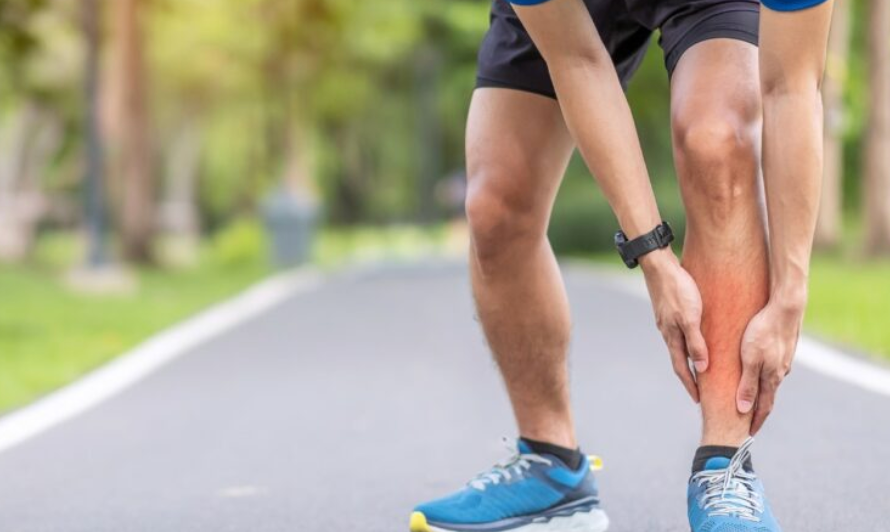
图9-17
● "外胫夹"是描述劳力性小腿疼痛的一般术语
● MTSS（后外胫夹）= 骨膜炎（骨膜炎症），影响腿部后关节腔肌肉（胫骨后肌、趾长屈肌、拇长屈肌和腘肌）
● 活跃人群的过劳性损伤，运动诱发性疾病，往往由活动突然变化引起
● 跑步者、舞蹈员和军人的常见损伤
● 前外胫夹 = 前关节腔肌肉受累（胫骨前肌、趾长伸肌、拇长伸肌及筋膜和骨膜内层）
● 与劳力性活动有关，病因尚未完全掌握
● 与应力性骨折鉴别：外胫夹不需要彻底静休，调整训练课程即可
● 课程设计调整：
● 提供低冲击力/低里程数项目+交叉训练备选（如停止跑步→改为骑行和游泳）
● 各部位有时间休息和愈合
● 逐步引入完整动作而不引起症状复发
● 小腿肌群（尤其比目鱼肌）无痛拉伸可有效缓解MTSS症状
● 静态姿势和动态评估→发现足部/踝关节错位或不稳定→恢复运动需改善足部和踝关节柔韧性和稳定性
5.3.2脚踝扭伤
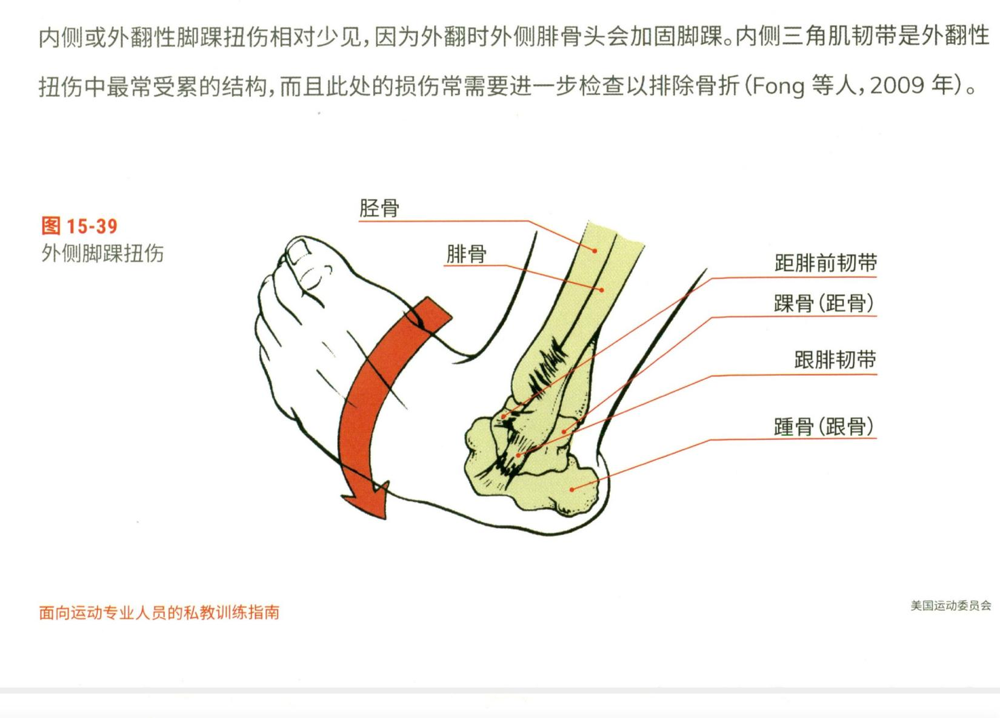
图9-18
● 每年影响200万美国人（运动和高度活跃人群仅占一半）
● 外侧/内翻性扭伤最常见（约75%）→距腓前韧带、跟腓韧带、距腓后韧带
● 机制：过度跖屈+内翻
● 70%外侧扭伤导致反复性扭伤和慢性症状
● 内侧/外翻性少见（外侧腓骨头加固）；内侧三角肌韧带最常受累，损伤常需排除骨折
恢复训练
● 遵循与其他扭伤一样的运动恢复指导
● 负重关节，可能需更长时间恢复
● 愈合早期可能需使用拐杖；医生可能要求使用支架
● 可继续锻炼非损伤区域（如上半身）；损伤区域始终在运动中受保护
● 物理疗法结束后关键第一步：修复本体感受、柔韧性和力量
● 韧带是本体感受反馈的主要来源
● 渐进式单腿训练促进本体感受
● 避免在不平稳表面训练（半泡沫滚筒/微型蹦床）→超负荷本体感受系统（尤其初始阶段）
● 侧向运动打开外侧踝关节→可能产生不必要张力→确保客户准备好后再进行冠状面运动
5.3.3跟腱炎
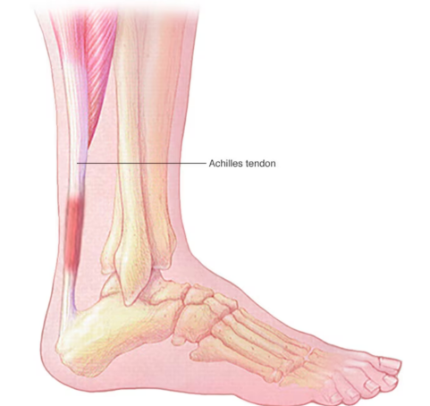
图9-19
● 跟腱炎症→可能发展为II级或III级拉伤（尤其>45岁）
● III级拉伤=跟腱断裂，多由慢性跟腱炎引起
● 常见损伤机制：突然从站立位启动运动（如垒球比赛离开一垒）
● 结构性因素：高弓足、扁平足、腿长不等、外侧踝不稳
● 健身相关因素：训练机制不当、鞋子不合脚、肌肉无力、柔韧性差
● 课程设计可纳入具体训练项目逐步改善弹性；任何要求多平面反应度和脚趾离地推动的训练均可达成目标
● 进阶路径：简单提踵→绳梯操练
● 重获小腿柔韧性是关键，但避免过度拉伸跟腱（会刺激肌腱）
● 柔和动态拉伸作为热身一部分
● 站立位拉伸小腿时脚保持中立位（避免过度旋前/旋后），脚直指前方
● 逐步恢复背屈ROM和力量+步行抬脚阶段控制力
5.3.4足底筋膜炎

图9-20
● 足底/跖表面结缔组织发炎
● 可运动，但医疗专业人员可能叮嘱限制
● 目标：让客户感到具有挑战性但不使足部负荷过度的健身计划
● 将特定足部运动整合到一般健身计划中效果最好
● 拉伸腓肠肌/比目鱼肌/足底筋膜→缓解症状
● 自我肌筋膜放松（足底滚网球/自我肌筋膜放松球/高尔夫球）→提高背屈ROM+缓解疼痛
● 对整个后侧链肌群运用自我肌筋膜放松术也可提高背屈ROM
● 强化足内在肌→改善足弓稳定性→减少足底筋膜压力
足/踝/小腿课程设计四步法
1. 解决足部和脚踝灵活性和稳定性
2. 改善控制矢状面运动的肌肉力量
3. 改善控制横状面和冠状面运动的肌肉力量
4. 改善后侧链肌群力量
日常训练建议
● 拉伸：每日一次或每两天一次最有效；可推荐客户自行完成
● 即使存在小腿/足部功能障碍，用网球对足底筋膜自我肌筋膜放松也有益
● 平衡练习：每天做无过度使用风险；如刷牙时用患肢单脚站立练习平衡（每天两次1-2分钟本体感受训练）
表9-7
| 各病症关键记忆点总结 |
|---|
表9-8
| 病症 | 关键记忆点 |
|---|---|
| 愈合三阶段 | 炎症期（3-4天）→修复期（~6周）→重塑期（4周-2年）；急性期RICE处理 |
| 疼痛阈值 | 疼痛>3级即停止运动 |
| 肌肉拉伤 | I级轻/II级中/III级重（完全撕裂）；老年人更易III级 |
| 韧带扭伤 | I级微裂/II级部分撕裂/III级完全断裂；ACL机制=过伸+扭伤 |
| 软骨损伤 | 大部分无血管→无法自愈；半月板外侧1/3例外 |
| 脑震荡 | 二次撞击综合征可致命；必须完全停止直到获医疗许可 |
| 椎间盘损伤 | 压迫+剪切力→纤维环撕裂→髓核渗漏→压迫神经→牵涉痛；Valsalva也增加风险 |
| 肩峰撞击 | 肩胛面过头推举（额状面前30°）；先矫正姿势→强化肩胛稳定肌→再过头 |
| 网球肘 | 外上髁=伸肌肌腱；30-55岁常见；避免增加压力/腕部屈曲伸展握紧 |
| 高尔夫球肘 | 内上髁=屈肌肌腱；30-55岁常见；同网球肘注意事项 |
| 腕管综合征 | 屈肌支持带下→压迫正中神经→疼痛麻木；需人体工程学评估 |
| 肘/腕/手课程四步 | 预防过度使用（多手柄/手套）→各平面拉伸增ROM→腕手力量训练→逐步增牵引重量 |
| 颈部 | 脊柱错位引起连锁反应→解决动力链全段，不只是患处；单独强化颈部不应作为目标 |
| 下背部 | 80%成人会发生；30%转慢性；耐力优先于力量；每天训练最有效 |
| 下背部四步 | 纠正左右不平衡→纠正骨盆前/后倾→增加髋旋转ROM→强化后侧链 |
| 日常脊柱训练 | 猫牛式（动作训练非拉伸）+改良卷腹+鸟狗式（5-8秒/侧）+侧桥（5-8秒/侧） |
| 梨状肌综合征 | 22%坐骨神经穿过梨状肌；≥6%"下背痛"实为梨状肌综合征 |
| IT束摩擦 | 膝外侧疼痛；骨盆失衡→IT束紧绷→摩擦股骨外侧上髁 |
| 膝部肌腱炎 | 髌腱/鹅足腱/股四头肌腱；四头肌紧张→增加髌骨压力→自我肌筋膜放松+伸展 |
| PFPS | 股骨内旋失控+IT束紧张→髌骨轨迹异常；下楼/下坡痛加剧；扁平足/腓肠肌紧张/髋外展外旋无力均相关 |
| 膝关节注意 | 避开开链膝伸展→选闭链负重训练；全膝ROM可能无法完全恢复 |
| 外胫夹 vs 应力性骨折 | 外胫夹不需完全休息；应力性骨折为某点触痛、局部渐进痛 |
| 踝扭伤 | 75%在外侧；70%导致反复扭伤；机制=过度跖屈+内翻 |
| 踝扭伤恢复 | 修复本体感受→渐进单腿训练；避免不平稳表面；侧向运动确保准备好后再进行 |
| 跟腱炎 | 柔韧性是关键但避免过度拉伸；可进展为跟腱断裂（>45岁高危）；脚保持中立位直指前方 |
| 足底筋膜炎 | 拉伸小腿+足底筋膜；滚球自我肌筋膜放松提高背屈ROM+缓解疼痛；强化足内在肌改善足弓 |
| 下肢课程通用 | 灵活性/稳定性→矢状面→冠状面/横状面→后侧链力量 |